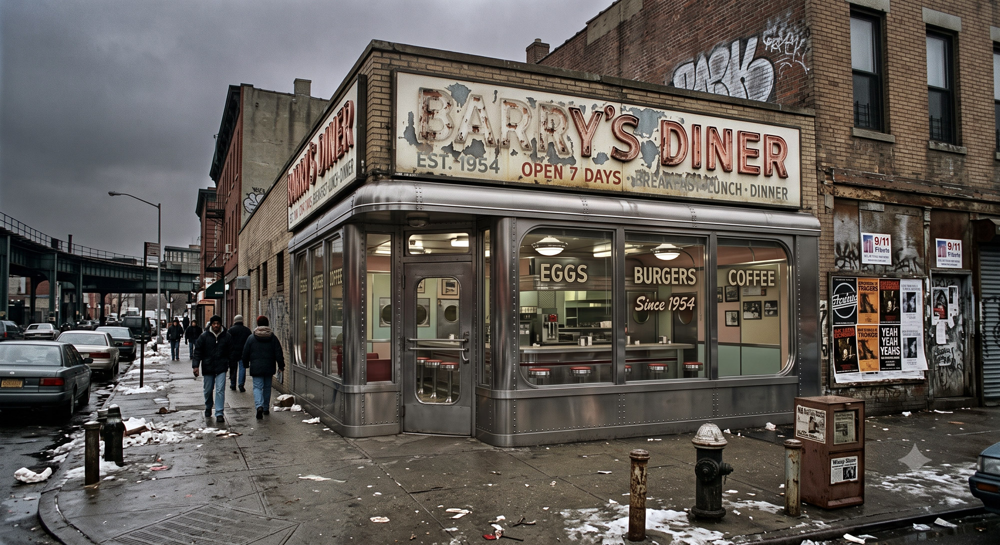

FALL-LINEフォールライン
UPDATED 2026.08.26

残響 ウィリアムズバーグ
「ねえ、ミラ。昨日のオーディションどうだったの？」
声をかけてきたのは、同じシフトのノーラだった。エプロンの紐を首の後ろで結び直しながら、カウンター越しに身を乗り出してくる。
ミラ・ハーロウは皿を拭く手を止めずに、肩をすくめた。「監督って、最初の十秒で決めてしまうらしいの。私のときは、台詞を言い始めたときにはもう、次の子のこと考えてる感じだった」
「またそれ」ノーラは笑った。「あんた、半年前から同じこと言ってる」
二〇〇二年、二月。ブルックリン・ウィリアムズバーグ、ベッドフォード・アヴェニューから一本外れた角に、〈バリーズ〉という名前のダイナーがあった。アイリッシュ系の初代オーナーが店名にだけ名を残して亡くなり、いまはギリシャ人の家族が回している。看板の五〇年代の筆記体の文字が消えかかっている。ミラはそこで週六日、朝から夕方まで皿を洗い、客に卵料理を運んでいた。夜は十四丁目の小さなスタジオで芝居の稽古をしていた。たまにオーディションが回ってきた。ほとんどは、誰の役にもなれずに帰った。
天井近くの金具に吊られた、AIWA製の小型ブラウン管テレビが、低い音量で『シンプソンズ』の再放送を流している。バートが何かをやらかし、ホーマーの叫び声が店内に抜けていく。誰もノイズ混じりの滲んだ画面を見ていなかった。窓の外は灰色の空で、Lトレインの軋む音が遠くから断続的に届いていた。

ツインタワーが崩れてから、五ヶ月だった。街はもう日常を取り戻したと言われていたが、ミラにはそれが嘘に聞こえた。マンハッタンの南端まで行けば、大きなビルの大理石の門標を指でなぞるだけで、あの日の灰色の粉塵がまだ指に付いた。先週、求人の張り紙を見にいったついでに、ミラは誰もいない正面玄関でその大理石に自分の名前を書いてみた。書きながら、なぜそんなことをしているのか、自分でもわからなかった。書いたあともしばらく動けなかった。
ポケットの中で、携帯が短く震えた。Nokia 3390の小さなモノクロ画面に、ショートメッセージが浮かんでいた。
「演技スクール 受講料 残額 至急」
ショートメッセージは、それだけで切れていた。続きは家に帰ってメールを開けば届いているはずだった。ダイアルアップの音が頭の中で鳴り始める。十分待って、繋がって、ようやく文章が読める。それから返事を打つ。送信ボタンを押してから相手の手元に届いたかどうかも、しばらくわからない。
昼の休憩に、ミラは店を出て二ブロック先の地下にある中古レコード屋へ降りていった。看板には数十万枚以上と書かれていたが、実際にはそれ以上あるように見えた。棚と棚の間が人ひとり通れるだけしか空いていない。誰かが選んだ盤が落ちる音、ジャケットを擦る指の音、それだけが薄い天井の下で増幅されて、地上の音はもうここまで届かない。ミラはこの店の地下にある暗い湿った空気が好きだった。地上の世界より、ここのほうがいくぶん本物に近い気がした。
ミラは三年以上、The Durutti Column の『Deux Triangles』という一枚を探していた。いつもとは違う棚を選んで、端から端まで指を真っ黒に埃で汚して掘ったが、今日の棚にはなかった。半年前、別の棚から Martin Denny の『Quiet Village』を三ドルで救い出したことがある。会計のとき、自分の指が少し震えていたのを覚えている。
夕方のシフトが終わったあと、ミラは地下鉄に乗った。あの粉塵で名前をなぞった大理石を、もう一度見ておきたかった。
イースト・リバーの下を潜って、向こう側へ出る。ウォール・ストリートの駅から地上に上がった頃には、もう夜だった。
粉塵の上に書いた名前は、なかった。
ミラは指でもう一度、なぞった。今度は粉塵そのものがなかった。門標にも、歩道にも、道路の縁にも。乾いた、磨かれた大理石だけが、彼女の指の下にあった。
彼女はしばらく、その大理石を見ていた。それから、何でもないことのように指を引いた。
数ブロック歩いたところで、明かりの灯った小さな商店の前を通った。デリカウンターから、甘いドーナツと煮詰まったコーヒーの匂いがしている。入り口の床に敷かれたえんじ色のフェルトのカーペットには、油汚れのシミがついていた。その上で店の白黒のハチワレの猫が横たわり、薄暗い蛍光灯の光のなか、毛繕いをする手を止め、こちらをじっと見ていた。
ミラはその猫をしばらく見ていた。それから、駅のほうへ歩き出した。

プロローグ 青い扉の部屋
指先にはまだ感触が残っていた。乾いた、磨かれた大理石。あるはずだった粉塵の、ない感触。
ミラは目を開けた。

頭の後ろから端子を抜く。ダイブ筐体の脇でリサが低く駆動した。腰ほどの高さの古い自走機が箱型の頭部にあるレンズをミラへ向け、帰還後の波形を確かめている。異常がないと判断すると、短い作業腕を引き、接続灯を一つずつ消した。室内は暗く、雨が窓を打っていた。指先の大理石の感触と、鼻の奥に残る〈バリーズ〉の煮詰まったコーヒーの匂い。それだけが、現実の部屋にまでついてきていた。
二〇〇二年のニューヨークは、プラチナカラーと呼ばれる上層階級が休暇として買う、古い生活のための区画だった。皿を洗い、注文を取り、文字数の限られたショートメッセージを送り、返事を待つ。ダイアルアップの音に数分を預ける。世界がテクノロジーに明け渡される前の不便さは、彼らにとって、金を払ってでも触れたい手の込んだ娯楽だった。
運営していたのは、マシモト基建傘下の休暇事業会社だった。金を払えば、どの時代で、どんな生活を、どれだけ続けるかまで注文できた。ただ、これほど精密な街と、そこで続く生活を維持できる契約者は、世界でも数えるほどしかいなかった。検収票の発注者欄には、匿名の契約番号だけが記されていた。
ミラは客ではない。納品前のフロントテストダイバーとして、壊れた動線と記憶の綻びを調べるために入った。納品後も、保守用の複製と、失効処理から漏れたミラのテスター権限だけが残った。彼女は依頼票を通さず、何度もそこへ戻った。
あの古い生活はいつも報告書の欄には収まらない何かを残した。煮詰まったコーヒーの匂い。埃で黒くなった指。店先の猫の目。消えた灰色の粉塵は、何だったのか。テクスチャ処理の漏れか、清掃ログの遅延か、それともあの日の名残そのものだったのか。どれも上層が買う休暇の小道具にすぎないはずだった。そう言い切るには、指先の感触があまりに長く残りすぎた。

ウィチタ自治区では、雨がもう四十年やんでいなかった。
正確に言えば、それは雨ではない。都市の上層を覆う排熱層が夜ごとに冷え、昼のあいだ機械が吐き出した水蒸気が酸を含んだ細かな粒になって落ちてくるのだ。粒は塔の側面を伝い、看板のネオン管を白く曇らせ、路面に浮いた油膜の上を虹色に滲ませながら、低いほうへ低いほうへと流れていく。住人は誰もそれを天気とは呼ばなかった。ただ「外」と呼んだ。外に出るというのは、傘を持つかどうかの話ではなく、肌と肺をどれだけ削られてもいいかという覚悟の話だった。
音も四十年やんでいなかった。ビル群の上層──排熱層のさらに高い、人の住まない階に据えられた工業区から、低いブザー音が一定間隔で絶え間なく降りてくる。何を報せる音なのか、いまではもう誰も知らない。たぶん遠い昔は警報だったものが、点検され、修理され、やがて点検そのものを忘れられて、ただ鳴り続けているだけだ。住人はその音で眠り、その音で起きた。音がやんだら、それはそれで何かが取り返しのつかないところまで進んだ合図なのだろうと、みな漠然と思っていた。だから誰もやめてくれとは言わなかった。
夜もほんとうの夜にはならなかった。落ちてくる水蒸気の幕の裏側に、高層の工業ビルの灯りが下から滲んで拡散し、空ぜんたいが鈍く発光している。星は一度も見えない。雲という雲が、橙とも灰ともつかない色に裏から照らされて、街はいつも夜明け前の三十分がそのまま固まったような、決して明けない薄明かりの底に沈んでいた。闇さえもこの都市では、配給されていなかった。
その自治区の番号でしか呼ばれない区画に、番号すら割り当てられていない部屋があった。青い扉の部屋、とビルの住人たちは呼んでいた。そこに、ミラ・ハーロウは住んでいた。
部屋は狭く、寝台と椅子型の古いダイブ筐体、それに腰ほどの高さの、無骨な小型自走機が一台いるだけだった。ダイブ筐体の座面は、長年の使用で彼女の体の形にへたり、革の継ぎ目から黄ばんだ詰め物がのぞいている。座るたびに筐体は人間ひとりぶんの疲労を、ゆっくりと受け止めてきしんだ。
小型自走機は、ミラがダイバーになった年に払い下げられた旧式機だった。筐体正面の上部には、型式名〈ＬＩ－２ ＭＯＤＵＬＥ〉が残っていた。この型式は、現場では昔からリズと呼ばれていた。ミラは手製の型紙で末尾の〈－２〉を〈Ｚ〉に塗り替え、綴りのほうを通り名に合わせてやった。それでも彼女だけは、リサと呼んだ。以来二十年、一度も乗り換えなかった相棒だ。

リサはダイブ筐体と外部回線のあいだに入り、ミラへ届く信号をすべて検査した。侵入コードを遮り、心拍と呼吸と神経波形を監視し、帰還路を開いたまま保つ。筐体がミラの身体を預かるものなら、リサはその身体へ通じる扉を預かるものだった。
ダイブ筐体の足元と、リサの履帯とのあいだには、年老いたハチワレ猫がうずくまっていた。ミラがダイブに沈むたび、猫はそこにいた。戻ってきたとき、猫はやはり、そこにいた。
壁には何も貼っていない。写真も、絵葉書も、依頼のメモも。ミラはずいぶん前から、過去を壁に貼るのをやめていた。貼ったところで、それが本当に自分の過去なのか、この街では誰も保証してくれない。記録はいくらでも書き換えられるし、人の頭の中身も同じだ。だから彼女は、壁を白いままにしておくことを選んでいた。空白は、少なくとも嘘をつかない。
彼女は四十二歳だった。少なくとも、登録局の台帳ではそうなっていた。この街では年齢は思い出の総量ではなく、ただの数字でしかない。誕生日に意味を持たせる者は、もうほとんどいなかった。
ミラの職業は、仮想空間の潜行者──ダイバーだった。登録局の分類では、彼女たちの接続方式はヴァイタル・ダイブと呼ばれる。脳だけではなく、心拍、呼吸、痛覚、反射までを接続先へ預ける潜行。だが現場の人間は、そんな長い名前を使わない。ただダイブと言った。脳の付け根に挿した端子から信号を流し、肉体をこの筐体に残したまま、デジタルの身体で別の世界へ降りていく。企業が新しい仮想惑星を商品として売り出す前に、その世界をひとりで歩き、地形を測り、足を取られる場所や人を殺す仕掛けを洗い出して報告する。地図のない世界へ最初に足を踏み入れ、最初に死にかけ、それでも最初に戻ってくる。それが彼女の仕事であり、生計であり、たぶん、彼女の人生のほとんどすべてだった。
その仕事を世間はフロントテストと呼んだ。名前だけ聞けば、まだホワイトカラーの側の仕事のように聞こえる。だが考える仕事はもう自分の頭からではなく、上から降ってくる。設計も、交渉も、文章も、解析も、都市の基盤につながった合成知性の群れが、人間より先に済ませてしまう。
合成知性から降りてくる仕事を、人間の神経で最後に確かめる者たち。機械が誤っても、最後に責任を負うのは、それを確かめた人間のほうだった。そういう層を、グレーカラーと呼んだ。ホワイトカラーの言葉で考え、ブルーカラーの危険を負う者たち。端末の前に座っていても、彼らは現場にいた。フロントテストダイバーは、その中でもいちばん古い冗談のような職だった。機械が組み上げた仮想惑星に、人間の脳をつないで、最初に歩かせる。社会はその仕事を必要としたが、尊敬はしなかった。
フロントテストには、古い規定があった。検収を終えたダイバーは、現地で使った防護服と装備を帰還前にすべて焼却する。汚染した地形データ、未登録生物の痕跡、ダイブ先の残響を、帰還路へ持ち込まないためだ。炎も灰も仮想のものにすぎない。だがダイブの中で受けた感触は、現実の身体と同じ重さで脳に記録される。技術者はそれを「神経等価」と呼んだ。戻ったあとも髪の根元や爪の間に、細かな灰が挟まっている気がすることがあった。
ミラはグレーカラーという呼び名を嫌ってはいなかった。ホワイトでもブルーでもない。たしかに、自分の仕事の終わりには、いつも灰が残った。
ダイブの中では、痛みも現実とまったく同じだった。仮想で炎に巻かれれば、脳は現実の皮膚も焼けたと信じ込み、戻ったあとも何日かは触れられない。仮想で高所から落ちれば、現実の胃も一緒に浮く。それでもダイバーが死なずに済むのは、致命傷の寸前で接続が自動的に切れるからだ。切れずに戻れなかった例も、ミラは知っていた。同業者が三人、椅子の上で目を見開いたまま、二度と意識をこちらへ戻さなかった。そのうちの一人は、彼女が新人の頃に手ほどきを受けた男だった。葬式はなかった。身体は処理班に運ばれ、台帳の番号がひとつ抹消された。業者は椅子から、彼の体の形にへこんだクッションだけを外して持っていった。部屋には、床にボルトで固定された金属フレームだけが、外されずに残っていた。
ミラは自分の手の甲を見た。古い火傷の痕が、皮膚の上に薄く残っている。仮想空間で負った傷が、そのまま現実の皮膚に焼きついたものだ。鏡の中の自分より、彼女はこの傷痕のほうをよく覚えていた。どちらが本物の自分の傷なのか──そんな問いは、長いこと考えないようにしていた。考え始めると、椅子から立てなくなる。それも、同業者から学んだことのひとつだった。
窓の外、ビルのあいだに架かった超高層の高架を、磁気浮上バイクが二台、競うように駆け抜けていった。磁気で浮いた車体は路面に触れず、駆動の音もない。ただクラクションと、二本のテールライトの残光だけが酸の雨を一瞬裂いて、すぐにかき消える。ミラはその光の尾を、意味もなく目で追った。やがて端末が、机の隅で低く鳴った。新しい依頼の合図だった。
猫が顔を上げて、ミラを見た。
彼女はしばらく動かず、雨の音と端末の音を両方聞いていた。それから足元へ手を伸ばし、老いた猫の額を指の背で撫でた。猫は目を細めただけで、鳴かなかった。
ミラは端末を手繰り寄せた。発信元の欄は空白だった。その晩の合図が、彼女をどこへ連れていくのか、このときのミラはまだ何も知らなかった。

第一章 ターラの雨
依頼人は、声しか伝えてこなかった。
端末の低解像度の表示面には、潰れた白い文字で〈映像未接続〉と出ていた。
ダイバーへの依頼は、たいてい相手の顔が見えない。代理のプログラムや合成音声、何重にも匿名化された通信層を介してくる。ミラはそれを不快に思ったことはなかった。顔の見えない依頼は、顔の見えない報酬で支払われ、どちらも後腐れがない。それで充分だった。だがその夜の声には、加工の下に、隠しきれない震えがあった。機械を通しても消せなかった震えを、ミラの耳は何年もの仕事を通じて聞き分けられるようになっていた。
「娘を探してほしい」と依頼人は言った。
ミラは端末の前で脚を組み替えた。「人探しは専門じゃない。家出や失踪なら、私より向いた業者がいる」
「家出じゃない」声が言った。「娘の身体は椅子にある」
ミラは、脚を組むのをやめた。
「消えたのは、ダイブ先だ。十日前から、帰還要求だけが向こうで出続けている。一日に何度もじゃない。途切れずにだ。あの子は戻ろうとしている。だが、戻ってこない」
「救助網は使ったのか？」
「未登録座標は扱わないと言われた。正規の登録ダイバーには、三件とも見積もりの前に切られた。あんたで四件目だ」
ミラは黙った。窓を打つ雨の音が、急に大きく聞こえた。彼女は答えを急がず、相手に続けさせた。追いつめられた人間は、間を置けば自分からしゃべる。
「娘の名はセレン。十六歳だ。十日前、家庭用の簡易端末から未登録の座標へ独りでダイブした。それでも身体との接続だけは……まだ切れていない」
簡易端末は異常を検知し、父親へ通知していた。生命反応は保たれ、接続も続いている。救急班は身体を端末から外せず、椅子に補助生命維持装置を取り付け、栄養補液を送りながら、座面の圧分散セルと下肢の間欠圧迫帯を作動させていた。
切れていない、という言葉の意味を、ミラは正確に理解した。少女の肉体は、いまもどこかの椅子の上で呼吸をし、心臓も動いている。簡易端末は意識を送り出したまま、細い接続だけを保っている。だが深い層から人間を引き上げるための帰還路がない。少女は入口を覗くつもりで、端末が連れ戻せない深さまで落ちたのだ。意識だけが十日戻らず、それでも帰還要求だけを出し続けている。戻る先がない、という言い方は正確ではない。戻る先は椅子の上にある。ないのは、そこへ戻る経路だ。要求だけが、空のまま回り続けている。どちらにせよ、放っておけば肉体のほうが先に尽きる。
「座標を送って」とミラは言った。引き受けるとは、まだ言わなかった。
送られてきた数列を見て、彼女は眉を寄せた。登録局のどの台帳にもない座標だった。企業の試験区にも、闇に流れている私設サーバーの索引にもかからない。正規のダイブ世界には、必ず「これは自分が作った」と名乗る所有者がいる。所有者を持たない世界など、本来この時代には存在しないはずだった。正規の仮想惑星を一つ立ち上げるほどの計算は、たいてい都市基盤システムの監視下を通る。監視対象の世界なら、登録局のどこかの台帳に痕跡が残る。その外にあるどこかへ、十六歳が独りでダイブし、戻ってこない。
監視対象外の座標を、若い連中は気取ってアウターと呼んだ。二年も潜れば、たいてい使わなくなる言葉だった。登録局の台帳に載らず、都市基盤システムの監視にも引っかからない場所。たいていは壊れた観光世界か、詐欺まがいの快楽区画だった。ミラも何度か、そういう場所の検収に入ったことがある。粗悪な快楽区画。監視逃れの違法倉庫。誰かが置き忘れた、空の試験区。だが、この座標は、そのどれとも違っていた。
「あの子のログに、ひとつだけ言葉が残っていた」依頼人の声が、最後に小さくなった。「たぶん、世界の名前だ」
ミラはその言葉を、口の中で繰り返した。ターラ。それが世界の名前なのか、座標に付けられた古い呼び名なのか、ログからはわからなかった。
彼女は引き受けると答えた。報酬の額は聞かなかった。聞かなかったのは、強がりではない。存在しないはずの世界、というその一点が、ダイバーになった頃の好奇心を呼び戻したからだった。
リサが短い作業腕を伸ばし、ダイブ筐体の背面に接続ケーブルを差し込んだ。ミラの心拍、呼吸、反射、痛覚の基準値が前面の小さな表示器を流れていく。接続先へ送る信号と、接続先から戻る信号は、どちらも一度リサを通る。リサは通信路を開く前に、混入したコードと神経刺激を一つずつ検査した。
端末には、フロントテスト用の認証列が浮いていた。ミラがそれを選ぶと、リサが署名を照合し、外部回線へ送った。正規の試験区なら、その認証で世界の裏口が開く。描画前の地平線、閉じた区画、所有者がまだ商品名を付ける前の奥の層まで入れる。だが鍵が保証するのは、入れる、ということだけだった。帰れるかどうかは、いつも別の話だった。
通常なら、接続先から短い応答が返る。許可、拒否、保留。どれであれ、扉の向こうにこちらを受け取る仕組みがある、という痕跡だけは残る。ターラからは何も返らなかった。拒否ではない。許可でもない。鍵は確かに差し込まれた。だが、その先にあるはずの鍵穴が、こちらを鍵として認識していなかった。鍵穴そのものが、こちらを知らない沈黙だった。
リサの表示器に、〈接続先応答なし〉と出た。頭部のレンズがミラを向いた。依頼を拒む権限は、リサにはない。だが短い作業腕は、筐体の緊急切断口のすぐ脇で止まっていた。
「わかってる。つないで」
リサは作業腕を緊急切断口の脇に残したまま、外部回線の表示灯を点けた。
ミラは椅子に深く座り、端子の冷たさが首の付け根の骨に届くのを待った。それから息を三つ数える。一つ目でいまいる現実を確かめ、二つ目でその現実を手放し、三つ目で落ちる。新人の頃に編み出した儀式で、効くかどうかはわからない。ただ、二十年やめずに続けているという事実そのものが、彼女を落ち着かせた。
落下の感覚には、何度やっても慣れなかった。胃が浮き、視界が一度完全に暗転し、それから、まったく別の重力が体をつかむ。
ターラは、まず音から始まった。
雨の音だった。ただし都市の酸の雨ではない。柔らかく、重く、生きている水の音だ。ミラが目を開けると、仮想の身体が仮想の肺で湿った空気を吸い込んだ。むせ返るような緑の匂い。腐葉土と、名前の知らない花の匂い。遠くで何かの生き物が、長く尾を引いて鳴いた。鳴き声には抑揚があり、別の方角から、同じ抑揚が返ってきた。呼んで、応える。それは会話の形をしていた。空っぽの試験区では、ついぞ聞いたことのない音だった。
空は鉛色の雲に覆われ、その切れ間から青白い光が斜めに射していた。眼下には見渡すかぎりの湿地と、銀色に光る水面が広がっている。地球とは似ても似つかない景色だが、死んだ世界ではなかった。むしろ生命が過剰なほどに満ちていて、それがかえってミラの神経を逆撫でした。これまで歩いた仮想惑星のほとんどは空っぽだった。作り手が、商品の骨組みだけ用意して、生き物まで作り込んでいないからだ。ここは違う。誰かがこの星に、売り物にする予定もなさそうな小さな虫の羽音まで、丁寧に植えていた。なぜ、と彼女は思った。誰のために、こんなものを。
「セレン」とミラは呼んでみた。返事はない。彼女は、最後に残された位置情報の中心へ向かって、ぬかるんだ湿地を歩き始めた。一歩ごとに、足首まで温い泥が絡んでくる。
異変は、半刻も歩かないうちに起きた。
空が暗転した。雲のせいではない。世界そのものが、一度だけちらついたのだ。古い映写機のコマが飛ぶように、景色が前後に揺れ、ミラの足元の地面が半秒だけ消えた。彼女は反射的に身を低くした。バグか、あるいは攻撃。ダイブ世界が不安定になるとき、それはたいてい、誰かがその世界に外から手を入れている証拠だった。手を入れているのが世界の所有者なら問題ない。所有者のいない世界で、それが起きているなら──。
考え終える前に、帰還経路がミラの制御から外れた。
ダイバーには命綱がある。致命傷の寸前で接続が切れ、現実の椅子で目が覚める仕組みだ。その瞬間を、ミラの神経は音として受け取った。鈍く湿った、太いロープが繊維ごと裂けるような音。聞き間違えようがない。誰かがダイブ先から通信路に割り込み、帰還経路の制御を奪った。回線は切れていない。ただ、もうミラのものではなかった。
そして世界が、彼女を落とした。
現実の部屋で、リサの表示器が赤く変わった。
ミラの心臓は動いている。呼吸もある。首の端子には、読めない神経活動が流れ続けている。だが接続先から返るはずの監視信号だけが、一度に消えていた。リサは緊急切断を要求した。応答はなかった。予備回線へ切り替え、同じ処理を繰り返した。外から侵入された形跡はない。帰還経路の制御だけが奪われていた。
短い作業腕が筐体の緊急切断口に触れた。だが物理回線までは落とさなかった。帰還同期を終えない強制切断では、接続中の自己状態を身体側へ再統合できない。ミラを昏睡させるおそれがあった。リサは生命維持を継続し、切断要求を最初から送り直した。リサの内部で冷却器の唸りが強まり、狭い部屋いっぱいに響いた。足元の猫が首をすくめ、耳を伏せた。
それは墜落だった。
仮想の空が回転し、湿地が斜めにせり上がってくる。ミラの身体は雨の中を落ちていった。神経等価。痛みは現実と同じだ。彼女は空中で体をひねり、腕で頭をかばい、来る衝撃に備えて全身を縮めた。落ちながら、頭の片隅はまだ仕事をしていた。水面が見える。泥だ。岩より泥のほうがいい。受け身を取れ──。
水面が、彼女を平手で殴るように受け止めた。
冷たさと衝撃と暗さが、同時に来た。ミラは泥水の底で一度跳ね、肺の空気を半分失った。目を開けても、茶色い濁りが視界を塞いでいた。上下がわからない。口元から漏れた気泡が頬をかすめ、耳の後ろへ抜けていった。そちらが上だ。ミラはその感触だけを信じて、手足を動かした。
水面を破って顔を出すと、ミラは激しく咳き込み、飲んだ泥を吐き、それから初めて自分の体を点検した。左の脇腹で、何かが軋んでいる。仮想の肋骨が折れかけているのだ。だが痛みは現実の肋骨とまったく同じ重さで、彼女の呼吸を浅く、速くした。落下の途中で、装備の多くが剝がれて消えていた。携行装備で残ったのは、腰の鞘に収めた小さなナイフだけだった。両手のグローブの甲には、薄い表示面が埋め込まれている。左は座標と接続状態、右は地形と装備を表示する。ダイバーの基本装備だ。
ミラが左手の泥を拭うと、表示面には〈基準座標なし〉の文字だけが残っていた。
ミラは岸へ這い上がり、しばらく泥の上に仰向けで倒れていた。生きた水の雨が、容赦なく顔を打つ。誰かが帰還経路の制御を奪った。故障ではない。この世界には、こちらの回線へ手を入れられる何かがいる。
「……いいだろう」ミラは声に出して言った。恐怖が少しだけ小さくなった。これも二十年で覚えたことだった。「まず、セレンを探さないと」
一度では立ち上がれなかった。ミラは左脇を押さえ、二度目でどうにか体を起こした。
彼女は水の流れていく方へ歩き出した。水のある方には、たいてい命がある。命のある方には、たいてい探しものもある。それは現実でも仮想でも、大きくは変わらない。
最初の夜、ミラは岩棚の裂け目で雨を避けた。眠りかけるたびに脇腹が痛み、呼吸の浅さで目が覚めた。
夜半、水際の苔が淡く光る中に、大きな獣が現れた。体高はミラの胸ほど。濡れた長い体毛には、白と淡い水色がまだらに混じり、苔の光の中では輪郭が途切れて見えた。目は閉じたまま、鼻面を左右に振って匂いを探っている。
風は獣の側から吹いていた。ミラは裂け目の奥で動かず、風向きが変わらないことだけを待った。獣はしばらく水を飲み、やがて暗闇へ戻っていった。
そのあとも眠れなかった。ミラは裂け目の奥でナイフを握り、夜が明けるまで水際の音を聞いていた。
最初の夜が過ぎても、リサはダイブ筐体の脇を離れなかった。
帰還不能が長引くと判断した時点で、リサは筐体の救命キットを開き、ミラの腕に栄養補液チューブをつないでいた。座面の圧分散セルを順に膨らませ、ふくらはぎの圧迫帯を作動させた。
呼吸が浅くなるたびに筐体の角度を変え、流量を調整した。ミラが手を強く握り込むと、作業腕で指を一本ずつほどいた。
再接続要求に応答がなければ、回線への負荷を避けるため、次の送信までの間隔を延ばす。それがリサに組み込まれた安全手順だった。リサは三度だけ従った。四度目からは、定められた間隔を待たずに要求を送り続けた。
現実側の筐体異常を知らせる通報も、外へは出なかった。顔の見えない依頼を受ける者は、基盤にすべての経路を預けない。リサを都市の監視基盤から切り離したのは、ミラ自身だった。筐体の警告表示だけが、赤く点滅していた。
三日目の朝も、リサは猫の皿に餌を出し、水を替えた。それから自分の神経培養核にも、カートリッジから一日分の栄養液を送った。猫は食べ終えると筐体の足元へ戻り、前脚を畳んだ。リサは接続要求を送り、拒否さえ返さない暗い回線を待ち、また送った。
四日目に、彼女は遺跡を見つけた。
湿地が尽き、岩がむき出しになった台地。砂と乾いた風の地帯に、それはあった。崩れた壁。風に磨かれて角の取れた柱。長い年月が、すべての輪郭を丸くしていた。だが壁の一角だけが、風化を拒むように正確な直角を残していた。ミラはその九十度を、以前にもどこかで見た気がした。仕事で歩いた別の世界かもしれない。だが、どこだったかは思い出せなかった。
そして、崩れ残った壁に、細い傷が幾重にも刻まれていた。
文字にも模様にも決めきれなかった。線は一定の間隔で枝分かれし、ところどころ石の奥まで青白く変色している。人が道具で削った跡とは違う。ミラには、それが何を示しているのかわからなかった。
遺跡のいちばん奥、崩れた祭壇の陰で、ミラは少女を見つけた。
セレンは膝を抱えて座っていた。痩せている。仮想の身体は本来飢えない。だが意識が「自分は飢えている」と信じ込めば、身体はそのとおりに描かれる。十四日、出口のない世界でひとりでそう信じ続けた者の体だった。爪は割れ、唇は乾き、目だけが妙に大きく見えた。
金髪の少女は、膝の擦れた色の薄いデニムに、黒いキャンバス地のハイカットを履いていた。袖の長すぎる古いフードパーカーの上から、レプリカのタンカースジャケットを羽織っている。どれも、明らかに本人のものではなかった。父親の棚から勝手に持ち出してきた服だと、ミラにはすぐにわかった。アーカイブ趣味の若者が好むジャパトラの着崩しだった。
「セレン」とミラは、できるだけ静かに呼んだ。脅かさないように、ゆっくり近づきながら。「迎えに来た」
少女が顔を上げた。その目に、ミラのよく知っている光があった。長く独りで歩いた者の目。世界そのものを疑い始めた者の目だ。何度も鏡で見たことのある光だった。
「……あなたも、帰れないのね」
「私の帰還経路は、誰かに乗っ取られた。セレン、あなたはどうやってここへ来た？」
セレンは目を伏せた。
「パパが集めてる古書のあいだに、数字の並んだ紙が挟まってたの。端末に読ませたら、古い座標だって出て。ちょっと覗いてみたくなったの。家庭用の端末なら、危ないところまでは入れないと思ってたんだけど……」
セレンはジャケットの袖口を握った。濡れた布を絞るように、指先へ力が入っていた。
「でも、接続したらここへ落ちてしまって。帰還を選んでも、〈経路なし〉としか出なかった。身体との接続は残ってる。でも、ここから戻る道がないの」
セレンはそこでようやく顔を上げた。
「ごめんなさい」
「謝るのは、戻ってからでいい」とミラは言った。
その瞬間、世界がまたちらついた。
遺跡の空気が震え、光が細かな粒になって宙にとどまった。セレンが息を呑む。ミラは少女と光のあいだに体を入れ、ナイフを抜いた。だが、裂け目から現れたのは、夜の獣ではなかった。
それは人の形に似ていた。似ているだけだった。体は、青白い光の筋が幾重にも束ねられてできていた。光の筋が寄り集まり、束になり直すたび、周囲の湿った空気がチチッ、と小さく鳴った。輪郭は、現実と仮想の境目のように、絶えず細かく揺らいでいる。ダイブ世界の住人でもなければ、企業の管理体でもない。ミラの知るどんなプログラムの挙動とも違った。それは世界の表面に立っているのではなく、世界の継ぎ目そのものから、内側へにじみ出てきたように見えた。
その輪郭に、ミラは見覚えがあった。宇宙飛行士はもう、古いアーカイブ映像の中にしかいない。頭部は大きく、肩は張り、両腕は厚い服に押しやられたように胴から離れていた。
青白い光の束でできた、古い宇宙服の残像。
中には誰も入っていなかった。
ミラには、それが光の人影に見えた。ほかに近い言葉がなかった。敵意がないと判断したわけではない。だが、目の前のものには、切れる肉も、刺せる急所も見当たらなかった。ミラは肩越しにセレンを見た。少女は息を止めたまま、光の人影を見つめていた。ミラはセレンを背に置いたまま、刃先だけを下げた。ナイフは、この相手に向ける道具ではなかった。
言葉は、まったく通じなかった。
光の人影は音を発した。ミラの鼓膜は確かにそれを受け取った。だが意味はほどけない。代わりに、それは光を使った。掌のあたりに光をともし、形を作り、消し、また別の形を作る。ミラは長いあいだ、青白い明かりに照らされながら、移り変わる形をただ見ていた。セレンが背後で、震える声で訊いた。「会話、してるの……？」ミラは答えなかった。答えを、まだ持っていなかった。
通じ合いは言葉の外で、ゆっくりと起きた。
ミラが思わず痛む脇腹を押さえると、その光が強くなった。光は彼女の指の形を空中へ写し取り、脇腹をかばうように重ねた。脇腹に重なった光の束が、痛みの拍をなぞるように明滅した。そこが痛むのか、と問いかけているようだった。目の前の相手は傷そのものではなく、痛みをかばう仕草を見ていた。
ミラは空中に残る手の形を見た。こちらの動きを、意味として受け取っている。なら、話せるかもしれない。言葉ではなく、形で。
ミラは背後のセレンを指し、それから空の向こう──現実があるはずだと信じている方角──を指した。その光は、しばらく揺れたあと、ゆっくりと、了解を示すような形に変わった。少なくともミラには、そう読めた。
光の人影は掌に二本の光の線を作った。一方は細く、セレンの胸から伸びて、途中で途切れていた。もう一方は太く、ミラの胸から空の向こうへ続いていた。その相手が爪のような光を太い線の根元へ当てる。線はミラから外れた。その瞬間、湿地へ落とされる直前に聞いた、太いロープが裂ける音がよみがえった。
その光は、これからすることではなく、すでにしたことを見せていた。ミラの回線を壊したのではない。帰還経路の接続先側をミラから外し、ここに留めていたのだ。光の中で、その端がゆっくりとセレンの細い線へ近づいた。簡易端末の接続では、この深さから還れない。ミラの線なら、一人を現実へ運べる。だが、一人だけだ。
光の人影が指を動かすと、指先から青白い線が伸び、チチッ、チチッ、と細い音を立てながら空中に残った。枝分かれしながら結ばれた形は、壁の刻みと同じだった。
ミラは風に削られた柱と、角の丸くなった刻みを見た。この存在は、石がここまで風化する時間を、この場所で過ごしてきたのかもしれない。ひとりで。
あるいは、この遺跡そのものが、その存在が造ったものなのかもしれなかった。
光の人影がセレンに近づいた。少女は身を硬くしたが、今度は逃げなかった。ミラは止めなかった。止めれば自分の帰り道は残るかもしれない。だがセレンは、もう十四日ここにいる。ミラは立ち上がらず、ナイフを鞘へ戻した。その光がセレンの全身を繭のように包んでいく。光の輪郭は爪のように尖った光で、少女の背後をゆっくりとなぞった。空間に、小さな亀裂が開いた。
「ミラさん」と、セレンが最後に言った。「あなたは……来た道を、覚えてる？」
ミラは答えられなかった。来た道はもう、自分のものではなかった。セレンの髪とジャケットの裾が先に亀裂へ引き込まれた。次の瞬間、身体が背中から圧縮されるように細まった。恐怖に見開かれた顔と、ミラへ伸ばした片手だけが、一瞬遅れてこちら側に残った。亀裂の縁で、バチッ、と青白い光が弾けた。次の瞬間、ゴォオォ、と遺跡の空気を丸ごと引きずる轟音が起こり、最後に残った顔と手も、色彩の残像を引いて亀裂へ吸い込まれた。亀裂が閉じると、遺跡には深い静寂だけが残った。
セレンは、ミラから外された帰還経路を使って現実へ還った。その経路は一人を通したところで閉じ、ミラは取り残された。
光の人影はまだ、ミラの前に残っていた。光が、何かをためらうように明滅している。ミラは遺跡の崩れた壁にもたれて座り、片手で痛む脇腹を押さえ、頭の中で出口を探した。見つからない。
「あんたは」とミラは、通じないと知りながら、声に出して言った。誰もいない世界で声を出すのは、相手のためではなく、自分の正気のためだ。「ここからずっと、出られないんだな。ひとりで」
その光が、すうっと静かになった。それは肯定に見えた。ミラの頭に、青い扉の部屋と、何も貼られていない白い壁が浮かんだ。ひとりでいる時間の長さだけは、言葉がなくてもわかった。
光の人影が、ゆっくり近づいてきた。奪った帰り道の代わりに、別の何かを渡そうとしているように見えた。その光が、ミラの左腕に触れる。熱くも冷たくもない。ただ、皮膚の下に何か小さく固いものが、そっと置かれた感覚があった。種のようなもの。仮想の身体に、現実の重さで。痛みはなかった。皮膚の下に置かれた硬さだけが残った。
光が引いていった。光の輪郭が、世界の継ぎ目へ戻っていく。最後にその光は、空中で一方へ伸びる形を作った。ミラにはそれが「歩け」と読めた。形は数秒だけ留まり、それから雨にほどけるように消えた。
ミラは立ち上がった。脇腹はまだ痛んだ。彼女が左腕にそっと触れると、皮膚の下の種は、確かにそこにあった。そのとき、湿地の向こうで、塞がれていたはずの出口がほんの半秒だけ、生き物が一度だけ息をするように開いて、また閉じた。見間違いではなかった。
彼女はその方角へ、足を引きずりながら歩き出した。ターラの生きた雨が、背中を打ち続けた。
どれほど歩いたのか、ミラにはわからなかった。脇腹の折れた肋骨が息のたびに灼けた。雨は止まなかった。歩きながら、彼女は気づいた。左腕の種が、自分の鼓動とは別の、低い脈で疼いている。ミラは足を止め、身体を左右へ向けた。出口が開いた方角へ向くと、疼きが深くなった。反対へ向くと浅くなった。種は針だった。彼女は針の指す方へ歩けばよかった。
進む先に、同じ湿地がもう一度現れた。木の並びも、水面の形も同じだった。必要な広さだけ複製され、そのまま放置された土地のようだった。だが影だけが遅れて動いた。
ミラは足を止めた。種の疼きが深くなる方角は、繰り返された湿地とは反対だった。ミラはそちらへ歩いた。
種の疼きが最も深くなった場所で、ミラは足を止めた。目の前には、雨に濡れた葦しかなかった。
ミラはそこに立ち、出口がもう一度開くのを待った。
やがて、葦の向こうの空間が、両生類のえらのように細く開いた。
ミラはためらわなかった。継ぎ目がもう一度開く保証はない。彼女は両腕を前に差し出し、開いた隙間に上半身から突っ込んだ。
隙間の奥で、青白い光が爆ぜた。光はミラの皮膚を照らしたのではなく、皮膚の下を通った。肋骨の折れた場所、左腕の皮膚の下に置かれた小さな固さ、脳の奥に残った帰還路の欠けまで、順に触れて抜けていく。ミラは、自分の身体が出口に照合されているのだと思った。
世界が、つかんだ。
文字どおりにつかんだのだ。継ぎ目の縁が無数の細い指のように、仮想の肩を、腰を、足首を、いっせいに握り返した。出ていくな、と世界が物理的に主張した。引き戻されかけたその瞬間、左腕の種がこれまでで一番強く、灼けた。ミラは反射的に左手を押し出した。継ぎ目の握りがほんのわずかに緩んだ。何かを作ったのでも、動かしたのでもない。自分をつかんでいる力だけを退けた。半身ぶんの隙間ができた。
頭と胸は抜けた。だが継ぎ目はもう閉じはじめていた。残った片脚をミラは力まかせに引いた。引いた拍子に、左足のブーツが継ぎ目に挟まり、そのまま向こう側へ消えた。脛がむき出しになり、酸の雨ではない雨がその素肌をひと撫でした。ミラは振り返らず、むき出しの脛を縁に擦りながら、残った脚を引き抜いた。
残った脚が光の内側へ抜けきると、青白い明るさが視界いっぱいに張りついた。その奥で、光の先に見えていた湿地の色が薄くなり、雨の線がほどけ、空の輪郭が消えた。音も遅れてほどけていった。雨音の奥行きがなくなり、水草の揺れる音も、ひとつの細い芯へ畳まれていく。最後に、キィンという高い残響だけが残った。
その光の中に、別の冷たさが混じった。湿地の雨ではない。首の付け根に刺さった端子の冷たさだった。光が遅れて消え、高い残響が細く切れた。その代わりに、リサの低い駆動音が戻ってきた。
第二章 左腕の種
ミラはダイブ筐体の座面で、目を覚ました。
リサの短い作業腕が、筐体の緊急切断口に差し込まれたまま止まっていた。前面の表示器には、四日ぶんの再接続失敗が積み上がっている。ミラが目を開けると、筐体に点滅していた警告表示が消えた。リサは頭部のレンズを彼女の左目へ向け、瞳孔の反応を確かめた。それから作業腕を抜いた。
足元で、猫が短く鳴いた。ミラは手を伸ばし、名前を呼ぼうとした。だが、呼ぶべき名前が出てこなかった。そもそも、この猫に名前をつけたことがあったのか、それさえ思い出せなかった。猫は気にせず、差し出された指に額を押しつけた。
青い扉の部屋。へたった革。首の付け根の端子の冷たさ。窓の外では相変わらず酸の雨が降り、看板のネオンが滲んでいる。何も変わっていなかった。何ひとつ。彼女は天井のしみを見上げ、自分が確かにここにいることを、いつもの三つの呼吸で確かめた。一つ目で現実を確かめ、二つ目で仮想を手放し、三つ目で──いつもなら、ここで何も起きない。だが今回は、三つ目の呼吸の途中で、左腕が疼いた。
彼女は袖をまくった。皮膚に傷はない。注射の痕も、切開の線もない。だが内側に、何かがある。指で押すと、骨でも筋でもない小さく固いものが、皮下をわずかに滑った。ターラの遺跡で、あの光が置いていった種。それが仮想の身体ではなく、現実の腕の中に、物として存在していた。
ミラはしばらく、その感触を指で確かめ続けた。仮想で受けた痛みが帰還後も残り、無意識の筋収縮が内出血を作ることは、神経等価で説明がつく。だが、これは痛みでも痕でもない。仮想空間で渡された物体が、現実の肉の中に移ってきている。説明する理屈を、彼女は持っていなかった。ラボの医療班に見せれば、たぶん腫瘍だと言うだろう。切れと言うだろう。だがこの種は、ターラで帰る方角を示し、閉じかけた継ぎ目の力を退けた。なぜあの光が自分に渡したのかは、まだわからない。それでも、自分を生きて帰したものを、わからないという理由だけで切り取ることはできなかった。怖くないわけではない。ミラは皮膚の下の硬さをもう一度指で確かめ、袖を戻した。正体がわかるまでは、切らないでおこう。
端末が鳴った。セレンの父親からだった。表示面の〈映像未接続〉は前と同じだった。違っていたのは、声に加工がかかっていないことだった。
「娘が目を覚ました。十四日ぶりに」
「どこにいる」
「医療区画だ。私はベッドの脇にいる」
声の向こうで、布の擦れる音がした。
「意識は戻ったようだが、まだ何も話さない。私を見ると涙を流して、手を握ろうとする」
深い接続から急に引き戻された者は、身体が意識を異物のように拒むことがある。最初に出るのは、嘔吐と痙攣だった。
「水は」
「少し飲んだ」
「吐いたか。痙攣は」
「どちらもない」
「なら、ひとまず大丈夫だろう。無理に話させないほうがいい」
しばらく返事はなかった。遠くで、少女が息を吸う小さな音がした。
「あなたは、どうやってあの子を」
「それは、本人が話せるようになってから聞いて」
「話せるようになると思うか」
「急がせなければ」
また、短い沈黙があった。
「そうか、ありがとう」
そこで通信は切れた。直後、報酬の入金欄に数字が出た。ひと月分の家賃には少し届かない、端数のついた金額だった。ミラは催促の項目を開きかけ、閉じた。
リサが作業腕を伸ばし、ミラの腕から電解補液チューブを外した。針を抜いた跡に消毒膜を貼り、前面の表示器へ〈休養推奨〉と出す。端末には、その夜の新しい依頼が一件届いていた。ミラは理由の欄を空けたまま、断る、を選んだ。二十年で初めてのことだった。
猫が筐体へ飛び乗り、ミラの腿に前脚を置いた。ミラはその額を撫でた。呼ぶべき名前は、やはり出てこなかった。猫はそんなことを気にする様子もなく、喉を鳴らした。リサの表示器には、まだ〈休養推奨〉が残っていた。
その夜、ミラはすぐには眠らなかった。
ベッド脇の時計は、ガラス管の中に橙色の数字を浮かべていた。午前零時を少し回っている。ミラはしばらく天井を見ていた。それから、簡易ベッドの縁に手をかけ、ゆっくりと立ち上がった。
ドアに掛けてあった黄色い耐酸ポンチョへ手を伸ばした。途中で手を止め、筐体の脇のリサを振り返った。
「少しだけ」
リサの表示器から〈休養推奨〉が消え、代わりに〈外出非推奨〉が出た。しばらくして、表示が一度だけ瞬き、〈濾過マスク〉に変わった。
ミラは黄色い耐酸ポンチョを羽織った。袖口の折り目だけ、コーティングが剥がれ、酸で薄く白く抜けていた。鼻と口を覆う濾過マスクをつけて部屋を出た。非常階段を下まで降り、建物の出口でフードを深く引いた。
酸の雨を避けて軒下を歩き、路地を二度曲がった。そこに、看板のない小さな店があった。入口の上には、紫色の殺菌灯が一本点いていた。看板代わりの目印は、それだけだった。ガラスは湯気で白く曇り、内側から古い換気扇の低い唸りが漏れていた。

客は少なかった。それでも店内は、煙と沸騰する湯の蒸気で白く濁っていた。外の雨とは違う湿り方だった。肺を削る酸ではなく、誰かが火を使い、湯を沸かし、失われたものの真似をしている匂いだった。
奥の席に、若い客が三人いた。作り物の皺が入った色落ちデニム。その皺の位置だけが、膝の動きと合っていなかった。妙に新しいワークシャツ。ミリタリージャケット。ここも、アーカイブ趣味の若者が好む場所になってしまったらしい。
古い生活も、古い服も、いまは若い連中の遊びになっている。二十年若ければ、ミラもセレンのような格好をしていたかもしれない。腹を立てる筋合いではなかった。ただ、自分がもうそちら側ではないことを思い出すと、少し疲れた。
カウンターの角だけ、何十年も肘を置かれたように木目が鈍く光っていた。ミラは、端にあるいつもの席に座った。
奥では、マスターが抽出機の金属ノズルを拭いていた。白髪に、長い白髭の痩せた男だった。客の顔より、器具の曇りをよく見ている。布を折り返し、ノズルの縁を一度磨き、角度を変えてもう一度磨く。その所作だけが、店の中で妙に静かだった。
店内にはいつも、ジョン、ポール、ジョージ、リンゴの声で、ミラの知らない歌が流れていた。同じ曲は二度とかからなかった。もちろん、彼らが残した曲ではない。合成知性が、その声と癖から、その場で作っているのだ。四人の死後に生成された曲は、すでに彼らが生前に残した曲の数をはるかに超えていた。いまでは、どれがオリジナルだったのかを聞き分けられる者も、ほとんどいない。だから誰も、それを偽物とは呼ばなかった。
壁には、ダミーメニューの横に、本物の未開封〈ブッチャー・カバー〉が額装されていた。ミラはジャケットに並ぶ四人の顔を順に眺め、最後の一人のところで視線を止めた。
リンゴ。
家で待つ白黒の顔が浮かんだ。前に名前をつけたことがあったとしても、もう一度つければいい。
「リンゴ」と、ミラは小さく声に出した。帰ったら、そう呼ぶことにしよう。
ミラが頼むものは、いつもひとつだった。いつもの〈ブレンドミックス〉を頼んだ。
コーヒー豆は、この時代にはもうない。ミラが生まれる前に、最後の栽培区が病害で落ちた。いま出されるのは、合成された苦味とカフェインを湯で溶いた代替品にすぎない。それでもマスターは、一杯ごとに湯の温度を測り、抽出機を温め、出し終えたあと必ず金属のノズルを丁寧に拭いた。豆がまだあった頃の手順だけを、誰に頼まれるでもなく守っていた。
ミラは密封パックを開けた。中身は、大昔にキューバ産葉巻を裁断したときに出た葉屑を、寄せ集めたビンテージものだった。タバコも葉巻も、もう作られていない。貴重品と呼ぶには貧しく、屑と呼ぶには高すぎた。葉屑は、琥珀色に曇った小さな樹脂ケースに入っていた。黒いアルミ蓋には保湿成分表が印刷されていたが、文字は掠れ、縁だけが何度も開け閉めされて塗装が剥げていた。
彼女は葉屑を細長くまとめ、金属メッシュの燃焼筒へ詰めた。それを細いシリンダーに滑り込ませ、後端に吸い口を取りつける。反対側からのぞく葉の先へ火を入れた。最初の煙をゆっくり吐き出すと、薄い煙はすぐに湯気の中へほどけた。
代替カフェインの苦味を一口飲む。〈バリーズ〉の煮詰まったコーヒーとは、似ても似つかない味だった。
火が消えると、ミラは吸い口を外し、シリンダーから燃焼筒を抜いた。灰になった葉の束を皿へ落とし、新しい葉屑を詰めて元へ戻す。もう一度、先端へ火を入れた。
カウンターの奥では、マスターがまたノズルを拭いていた。ミラは何度も繰り返されるその所作を眺めながら煙を吐き、左腕の内側にある小さな固さを、袖の上からそっと押した。
部屋へ戻ると、リンゴはダイブ筐体の座面で丸くなっていた。ミラが扉を閉めても、片耳を動かしただけで目を開けなかった。リサはその脇で低く駆動していた。
中枢モジュールには、薄い培養パネルを幾層にも重ねた神経培養核が収められていた。補給用の栄養カートリッジは、日本の老舗アミノ酸企業の商標入りだった。滅菌フィルターとともに定期交換が必要な、面倒で古い型だった。ダイバーになった年、ミラは利き目を相棒端末へ預ける処置を受けた。彼女の場合、それは左目だった。左目の視神経から分岐した視覚スパイク列は、低帯域に間引かれてリサの中枢へ送られ、心拍、呼吸、皮膚電位、姿勢反応の時刻列と重ねられていた。右目で見たものはミラの記憶に残る。左目からリサへ渡るのは映像ではない。視線がどこに、どれだけ長く留まり、そのとき身体がどう反応したかが記録された。
リサの仕事は地味だった。ダイブ中のミラの生体反応を全部記録し、筐体の角度を微調整し、危ない波形が出ればすぐに帰還処置を準備する。それだけ。だがその「それだけ」を二十年休まず続けた機械は、ミラのどの息継ぎが集中の前触れで、どの肩の落とし方が怖がっている合図かを、本人より正確に知っていた。
リサは左腕の種について、何も訊ねなかった。代わりに、淡々と、新しい監視項目を一つ自分のログに足した。〈左前腕・異物・要観察〉。それだけだった。ミラは、それでいい、と小さく頷いた。リサは余計なことを言わない。それが、彼女がリサを手放さなかった理由だった。
その力を自分の意思で使えると気づいたのは、三日後のまったく別のダイブでだった。
ありふれた仕事だった。企業の試験区。売り出し前の、空っぽの仮想惑星。岩と、設定をしくじった低すぎる重力と、まだ描かれていない作りかけの地平線しかない。出来上がったものを、売り物になる前に歩いて確かめる。それが彼女の仕事だった。生き物も天候もない。ミラはいつものように黙々と歩き、地形を測り、報告用の数値を頭に並べていた。退屈で安全な、家賃のための仕事だった。そのはずだった。
崖の縁で踏み込んだ足が地面を離れた。低い重力では、蹴り出した身体がすぐには落ちず、慣性のまま崖の外へ流れた。
落下が始まった。神経等価。胃が浮く。死にはしない。試験区にも命綱はある。だが侵害受容の残効は残る。仮想で折れた骨を身体図式が現実の損傷として保持すれば、防御性の運動抑制で三週間は椅子から立てない。三週間分の家賃が、落ちていく速度で頭をよぎった。
ミラはとっさに手を伸ばした。何もない空間へ。掴むもののない虚空へ。意味のない動きだ。落ちる人間が反射的にやる、何の役にも立たない動き。そのはずだった。
そして、止まった。
落下が、止まったのだ。正確には、落下そのものが消えたのではなかった。彼女を引いていた重力の手が、伸ばした掌に押されて、ほんの一瞬だけ彼女から手を引いた──そんな止まり方だった。世界はミラを退かせたのではなく、ミラのほうが世界に向かって、落ちる動きを「退いてくれ」と頼んだ。頼みは聞き入れられた。彼女の身体は岩肌の二メートル上で、宙に浮いていた。伸ばした手の先で、世界そのものが低く軋んでいる。ダイブ世界の物理法則──誰かが書いたはずの規則が──ミラの手の届く範囲だけでいっとき、拒まれていた。彼女自身の意思によって。新しく何かを作ったのでも、書き換えたのでもない。ただ、自分を落とそうとする力だけを退けた。
ミラはゆっくりと、岩の上へ降りた。膝が震えていた。恐怖ではない。恐怖なら、夜の獣で味わったばかりだ。これは別の何かだった。彼女は両手を目の前にかざし、長いこと見ていた。火傷の痕のある、見慣れた自分の手。その手が、世界の動きをひとつ、退けた。退けた、というのが、いちばん正確だった。動かしたのではない。退いてもらった。
「……いまのは何だ」と、彼女は誰もいない試験区で呟いた。左腕の種が、答えるように、かすかに疼いた。
そのあと、頭の奥に奇妙な鈍さだけが残った。痛みではない。疲労でもない。何かを考えようとすると、輪郭だけが少し遅れてついてくる。理由はわからなかった。ミラはダイブを切って椅子に戻り、その夜、いつもより一時間早く眠った。
翌朝、ミラは、ターラから戻った直後に猫を呼べなかったことを思い出した。あの夜、リンゴと名づけた。だが失われたのは猫の名前ではない。以前に名前をつけたかどうか、それさえ思い出せなかった。二度とも、何かを退けたあとだった。
彼女はその力を注意深く試し始めた。独りで、誰にも知られない場所で、少しずつ。
最初に確かめたのは、何ができないか、のほうだった。
ミラは試験区の岩に、手をかざして「動け」と命じた。岩は動かなかった。何度やっても、何ひとつ起きなかった。次に岩のすぐ脇の砂に手をかざし、「ここに、新しい石をひとつ作れ」と頼んだ。やはり、何も起きなかった。試しに地面の石ころをひとつ拾い上げ、空中で離し、それから「落ちるな」と頼んでみた。石は宙にとどまった。ふたたび「落ちろ」と命じても、今度は落ちなかった。動きを退けてしまったあとは、その動きはもう、退いたままだった。ミラが「やっぱり落ちてくれ」と頼み直しても、聞き入れられなかった。退けたものは、後から取り消せない。それが、最初にわかったことだった。
ミラはダイブ世界の中で、岩を地面に押さえる重さを退けた。岩は浮いた。流れる水の、流れるという動きを退けた。水は鏡のように止まった。崩れかけた足場の、崩れるという動きを退けた。足場はしばらく止まったままになった。最初のうちは、ひと掬いの砂を退けるだけで、こめかみの奥が鈍く痛んだ。だが痛みは情報だ。彼女はその痛みの読み方もすぐに覚えた。繰り返すうちに、両手で抱えるほどの岩を地面が引き戻す動きから、まるごと退かせられるようになった。回数を数えるのをやめた頃には、頭痛が消えていた。
頭痛が消えたとき、ミラは喜ばなかった。喜ぶ代わりに、注意深くなった。頭痛が情報だったなら、頭痛が消えたあとは、別の場所が、情報を出さないまま黙って減っているはずだった。彼女は試した。記憶のいくつかの隅を、わざと点検した。子供の頃に住んだ街の名前。最初に死んだ同業者の顔。火傷の痕がついた日の天気。──いくつかが、ぼんやりとしか戻ってこなかった。覚えていたはずのものが、輪郭だけになっていた。失われたものは、消えているのではなく、どこかへ流れているのかもしれない。ミラは試すのを、いったんやめた。
その夜、ダイブから戻ったミラは、ノートに自分の手で五行だけ書いた。後にも先にも、彼女が能力について紙に書いたのは、その一度だけだった。
- この種は「退ける」ことしかできない。動かす・作る・書き換える、はできない。生き物には向けない。
- 退けるたびに、私の中から何かが失われる。大きさは、退けたものに応じるらしい。
- 失ったと確かめられたのは記憶。次も記憶とは限らない。何を失うかは選べない。
- 種の脈は世界の継ぎ目と同じ拍を打つ。継ぎ目に近いほど、反応が強いように見える。
- 一度退けたものを後から退けなかったことには、できない。
書き終えると、ノートを閉じ、寝台の下の引き出しにしまった。
椅子の脇で、リサが低く駆動していた。小さなレンズは、ノートの文字ではなく、ミラの指先を見ていた。ログに残したのは、書いているあいだの心拍と、指の震えだけだった。
翌日、ふたたび試験区へ降りたとき、対岸の岩壁が、谷へ向かってゆっくり崩れ始めた。ミラは、その崩落を退けてみたい誘惑に駆られた。退け、と頼めば、たぶん止まった。だが、それだけの動きを退けたあとに何が失われるかは、頼んでみるまでわからない。彼女は、まだ自分の何が残っているのか、把握しきれていない人間が、見栄で大きな取引をしてはいけないということを、二十年の仕事で覚えていた。だから、崩れる岩壁へは手を向けなかった。大きすぎる動きを退けるのは、退けなければ誰かが死ぬときだけ。そう自分に決めた。
その力は、確実に彼女を変えていった。仕事のうえでは、それは恵みのように見えた。
受ける依頼の質が変わった。これまで業界で死地と呼ばれ、誰も近づかなかった深度から、ミラは平然と歩いて戻ってくるようになった。生還率ゼロと札を貼られた崩壊区から、迷い込んで動けなくなったダイバーを、立て続けに二人連れ帰った。三人目は、別の街から来た中年の女だった。四人目は、まだ十二の少年だった。少年は救出されたあと、ミラの顔を見上げても、礼は言わなかった。代わりに、こう訊いた。
「あなた、人間？」
ミラは答えなかった。少年の母親が泣きながら少年を抱き上げ、何度も礼を言った。ミラはその礼を、うまく受け取れなかった。礼を言われるたびに、少年の問いのほうが、胸の奥で大きくなっていった。
その夜、ミラは雨の音のする部屋で眠れずにいた。
窓を流れる水の筋を見ていた。ネオンの滲みを見ていた。左腕の種を、指の腹で、ゆっくり押していた。
問いが頭の中で、ひとつからふたつ、ふたつから無数へと増殖していった。この力は、本当に自分のものなのか。自分が鍛え、自分が手に入れたものなのか。それとも、ただ外から置かれただけのものを、自分は身につけたと勘違いしているだけなのか。種が勝手に芽吹いただけのことを、自分の手柄と呼んで、救った人間の数を数えているだけではないのか。
もっと嫌な問いもそこにあった。ターラから戻ってきた自分は本当に、ターラへ降りていった自分と同じ人間なのか。ダイブの帰り道で、自分の中の何かが、知らないうちに入れ替わっていないと、いったい誰が保証してくれるのか。記憶は、貼っても剝がれる。書き換えられる。消される。壁を白いままにしてきた恐れが、この夜は初めて、自分自身へ向いた。貼ったものが自分の過去かどうかではない。自分がその過去の持ち主なのか、それがわからなくなるのが怖かった。
ミラは目を閉じた。まぶたの裏に、ターラの生きた雨が降ってきた。緑の匂い。崩れた壁の、爪で削ったような線。そして、現実と仮想の継ぎ目で揺らいでいた、あの輪郭。言葉のない理解。光が空中に作った「歩け」の形。
あの一度きりの、言葉を介さない通じ合いだけが、奇妙なことに、彼女のいちばん確かな足場として、胸の底に残っていた。力よりも確かだった。記憶よりも、名前よりも確かだった。あのとき自分は、正しく理解されたわけではなかった。言葉も通じていなかった。ただ、あの光は、ミラが何を恐れ、何を守ろうとしているのかを、必死にたどろうとしていた。わかってもらえたのではない。わかろうとしてもらえた。その手触りだけは、書き換えようのないものとして、そこにあった。それだけは、本物だと言い切れた。
そのとき、机の端に置いたコップがかすかに鳴った。ミラが目を開けると、コップの水面が揺れていた。縁を越えた水が側面を伝い、透明な水滴がひとつガラスの外側に残っていた。机の上にも少しだけ水がこぼれている。椅子の脇でリサのレンズが静かに動いた。何も表示しなかった。リンゴが机へ飛び乗り、鼻先を近づけた。それから、こぼれた水を少し舐めた。
ミラは決めた。まず、ダイブの中の世界が何なのかを知ろう。戻ってくる先の現実とどこでつながっているのかは、そのあとで確かめる。自分が何者かを問う前に、自分がダイブの中で立っている床が、そもそも何でできているのかを確かめる。順番を逆にすると、足を踏み外す。それは、彼女がこの仕事で学んだいちばん古い掟だった。床を知らずに跳ぶ者は、必ず落ちる。
彼女は身を起こし、椅子の脇で静かに待つリサのレンズへ目を向けた。
「ターラの座標を出して」
リサの表示面に、古い座標が呼び出された。リサは何も訊ねなかった。ミラはその数字をしばらく見ていた。
今度は、誰かを捜索するためではなかった。自分が立っている床の下に何があるのかを、確かめるためだった。
第三章 薄い膜
セレンが話し始めた、と父親から連絡があった。
「娘が妙なことを言っている。あそこから帰ってきたんじゃない。ここへ移されたんだ、と」
ミラは、継ぎ目の中で、湿地の雨が首の端子の冷たさへ変わった瞬間を思い出した。
「本人と話せるか」
「まだ、私ともほとんど話さない」
リサが、父親の声と受信時刻を記録した。
ミラは、あの遺跡へもう一度降りた。リサが座標を固定し、接続深度を慎重に落としていく。視界が開くと、雨は前と同じ角度で降っていた。低い雲は濡れた鉛のように垂れこめ、湿地は同じ匂いで腐っていた。水草の下で、何か小さなものが泡を吐いた。
遺跡は、まだそこにあった。半ば泥に沈み、半ば世界の裏側へ食い込んだように、黒い石の面だけを雨の中に出している。ミラはしばらく動かずに待った。あの光が現れた場所を見つめ、あのときと同じ姿勢で立ち、息を殺した。
何も起きなかった。
左腕の種は、かすかに拍を打っていた。だがそれは答えではなかった。呼んでも、待っても、世界の継ぎ目は沈黙したままだった。光はにじまず、空間も裂けず、あの長い指も現れなかった。ターラは、最初から誰もいなかった場所のような顔をして、ただ雨だけを降らせていた。
ミラは遺跡の壁へ近づいた。前に見たときは、意味を持つ傷だとは思わなかった。だが今は違った。指先で、直角に折れた痕をなぞる。傷は削られたものではない。何か硬いものがぶつかった痕でもない。そこだけが一度、内側へ畳まれ、また戻されたように見えた。
石の奥に、細い線が走っていた。
雨に濡れるたび、その線は消えたり、浮かんだりした。縦でも横でもない。絵でもない。ひび割れと呼ぶには規則があり、文字と呼ぶには、ミラの知っているどの文字にも似ていなかった。彼女は顔を近づけた。読むことはできない。ただ、そこに何かが並んでいることだけはわかった。
ミラはその日、遺跡の傷に、ターラの景色とは別の規則があることを知った。
一九七〇年代後半の香港へ降りた途端、湿気が肌にまとわりついた。街じゅうの空気に、魚醤の匂いと生臭さが染みついていた。
ミラは薄い開襟シャツと濃紺のスラックスに、大ぶりの金縁サングラスを合わせ、小ぶりの革鞄を肩から下げていた。検収装備一式は、鞄の底に収めていた。
通りに突き出した赤いネオン看板が消えた。放電の低い唸りだけが、わずかに残ってから途切れた。次に赤い管が点くと、唸りは光から遅れて戻った。
看板を掲げた建物を裏側から確かめるため、ミラは路地の時計修理店に入った。作業台の向こうで、店主が右目にルーペをはめ、金色の角形をした自動巻き時計の裏蓋を閉じていた。
「赤い看板のある建物の裏へ出たい」
店主はルーペを外し、ミラの左手首に巻かれた日本製の液晶クォーツへ目をやった。
「いま、何時だ」
「午後六時十二分、四十七秒」
店主は金色の時計の文字盤を上に向けた。秒針は十二の位置で止まっていた。引き出した竜頭を回し、六時十三分に合わせた。
「日本のか」
「そうだ」
ミラは左手首の表示を確かめながら答えた。
「この調子じゃ、修理屋もじきに電池交換屋だな」
ミラの時計が六時十三分に変わると、店主は竜頭を押し戻した。秒針が動き始めた。
「この路地を奥へ行け。茶餐廳の階段の手前を左だ」
店を出て路地の奥へ進むと、表通りの音が遠のいた。人影が途切れたところで、ミラは鞄から検収用グローブを取り出し、両手にはめた。
建物の裏壁に沿って歩き、明滅の遅れが始まる位置を探った。そこで、左腕の種が脈打ち始めた。
壁には、同じものがあった。
直角に折れた痕。水に濡れると浮かび、光が変わると沈む細い線。ひび割れに似ていて、ひび割れではないもの。
その後もミラは、いくつもの世界へ潜っては戻った。依頼ではなかった。登録局の仕事でもない。誰かに報告するためでもなかった。ターラで見たものが、ターラだけの傷なのか、それとも造られた世界すべてにある記しなのかを、確かめたかった。
だが、潜るたびに増えていくのは、答えではなく、同じ形をした傷だった。
その傷は、描画が乱れるたびに、薄皮がめくれるように開いては閉じた。奥を覗くには、その隙間が閉じかけた瞬間に、両端が近づく動きを退ける必要があった。そのたびに、壁の影が持ち主より遅れて動き、継ぎ目には細い裂け目が残った。誰も気に留めないはずの住人が、彼女のほうを見た。ミラはその視線を避け、また次の世界へ降りた。
噂はミラ本人より速く、ダイブ世界の見えない底を伝っていった。
いくつもの造られた世界には、無数の住人がいる。企業が背景として描き込んだだけの人物。古いダイバーたちが置き忘れていった意識の残響。そして、ひとりでに育ってしまった、名もない意識の断片たち。
古い神経工学の仮説には、意識は頭蓋骨の内側だけで閉じておらず、接続された空間の側へ、わずかに滲み出すことがある、と書いたものがあった。神経等価は、その滲み出しを技術として利用しているのではないか。痛みも、記憶も、反射も、世界の側へ預ける。ならば、長く開かれた世界に、人間の意識の残りかすが染み込むこともあるのかもしれない。ミラは昔、その手の理論を笑って読み飛ばしたことがある。だが、与えられた台詞の外で生き始めた者たちを見たあとでは、もう同じようには笑えなかった。
彼らは互いに語る。語りは層を越え、基盤の隙間を伝って、いくつもの世界へ広がっていく。そして伝わるたびに、語りは少しずつ余分をそぎ落とされ、同じひとつの形へと痩せていった。不可能な深度から人を連れ戻す者。世界の動きを、素手で退ける者。
現実側へ最初に届いたのは、住人たちの祈りではなく、三行の障害票だった。〈規定外発話〉。〈割当動作の拒否〉。〈未登録対象への反復言及〉。
登録局の夜間処理室で、痩せた若い技師が、所有者の異なる五件を同じ表示面へ並べた。
「この五件は、同じ障害として扱うべきだと思います」
当直主任は、表示された所有者名を上から順に見た。
「すべて別の企業だ」
「座標も、住人の型も違います。でも、住人が口にした内容が似ています。深い場所から戻れなくなった者を連れ戻した女。閉じる壁の動きを、手で止めた女。呼び方は違いますが、どの世界でも同じ順序で話しています」
「共通の会話基盤を使っているんじゃないのか」
「使っていません。接続先の基盤も、管理企業も別です」
主任は腹を机の縁から離して背もたれに沈み、鼻から長い息を吐いた。それから椅子を寄せ、五件の接続履歴を一つずつ開いた。
「全件に共通する接続者は？」
「障害票に出ている識別子では、一人も重なりません。複数の座標を行き来している女性なら何人もいます。テスターも、観光客も。ですが、同じ識別子で全件に入った者はいないんです。外部接続のなかった区画でも、住人が同じことを話し、同じ割当動作を拒んでいます」
「話していた相手は？」
「障害票にはありません。各社の生ログには、音声と視線先が残っています」
「区画をまたいで照合できるか」
「できます。ただ、識別子は接続先ごとに別です。発行記録まで照合しないかぎり、同じ接続者でも別人として出ます」
「なら、この一覧から接続者を追っても、発生源には辿り着けないな」
「ええ。生ログと識別子の発行記録を、企業をまたいで開かないかぎりは」
技師は答えながらも、照合画面を閉じなかった。
隣の列から、別の局員が声をかけた。
「西部管区から、あと二件来ました。三項目とも同じです」
処理室の誰も声を上げなかった。ただ、いくつかの椅子が同時に動き、表示面の前へ寄った。
主任はしばらく七件を見比べたあと、それぞれの所有企業へ差し戻した。まず住人状態を直近の検収時まで戻す〈住人状態再同期〉を行う。同じ発話を繰り返せば、その住人が属する区画全体を直近の検収基準状態へ復元する。それでも発話が止まらない区画は、接続停止と区画再構築の候補に入れる。
規定どおりの処置だった。
翌朝、同じ三行を持つ障害票は十一件に増えていた。
ミラがある崩壊区へ降りたとき、そこは古い帝国都市を模した世界だった。白い石柱は途中で折れ、広場の床には剥がれたモザイクが濡れた鱗のように残っている。水路は詰まり、噴水の口からは不自然に明るい水が細く垂れていた。建物の影は日差しと合わず、壁に描画された蔦だけが、風もないのに一定のテンポで揺れていた。
住人たちは、すでに彼女を待っていた。ぬかるんだ広場に、最初は十人ほど。肩から布を巻きつけた者、腰紐だけで長い衣を留めた者、濡れた裾を両手で押さえている者。古代の衣装を模しているのだろうが、どれも少しずつ時代がずれていた。観光用に作られた古典世界の、礼装の型をなぞったものだった。彼女が歩を進めるあいだに、どこからともなく集まって、やがて百人を超えた。広場の静けさが、人数に反して深くなっていく。ミラが近づくと、ひとり、またひとりと地面に膝をついた。ミラが歩けば道を空け、その道の両側で、頭を垂れる。誰かが低い声で、名前ではない言葉を繰り返していた。称号のような、祈りのような言葉を。
「立ってくれ」とミラは言った。広場は、波が引くように静まり返った。「私は仕事でここを調べているだけだ。何かを変えるつもりはない」
最前列にいた老人が、ゆっくりと顔を上げた。浅黒い肌に、深い皺が刻まれていた。首から下げた金の細い飾りが、崩れた広場の日差しを受けて一瞬だけ光った。濁った瞳の奥に、消えずに残った力強さがあった。背景として置かれた住人なら、そんな目はしない。与えられた台詞の外側で、何かを見ようとしている目だった。「あなたは、この世界の動きに手を入れられる」と老人は静かに言った。「わたしたちは、それを変えられない。止めることも、逸らすこともできない。あなたは退ける。だから、神と呼んでしまう。ほかの呼び方を知らない」
ミラは、その言葉に返す言葉を持たなかった。プログラムされた世界なら、不可能ではない。合成知性が残したバグか、古い物理演算の漏れかもしれない。だが、そんな事例を、ミラは一度も聞いたことがなかった。濡れたタイルの上で頭を垂れた住人たちは、説明を求めていなかった。肯定すれば、彼女自身が壊れる。彼女は黙って、膝をついた人々のあいだを通り抜けた。濡れたタイルの上で、ブーツの底だけが小さく鳴った。通り過ぎたあとで、ひとり、またひとりと顔が上がる。背中に、無数の視線が貼りついた。
崇拝とは、距離のことだった。ミラは、それを肌で理解するようになっていった。
膝をつかれるたびに、彼女と相手のあいだに、薄い透明な膜が一枚、張られる。その膜の向こう側では、ミラはもうミラではなかった。彼女の痛みも、迷いも、家賃の心配も、火傷の痕も、すべて膜のこちら側に置き去りにされる。そして向こう側には、磨かれて都合よく整えられた、ミラの形をした何かだけが立っている。迷わず、怖がらず、ただ手をかざして世界を退けるもの。その姿は、ミラに似ていたが、ミラではなかった。
神とされるとは、そういうことだった。生身の自分が、少しずつ見えなくなる。痛がる人間として、間違える人間として、見てもらえなくなる。鏡を見ても、そこに映る疲れた女より先に、彼らが作り上げたミラの姿が見えるようになる。
ミラがいちばん恐れたのは、力そのものではなかった。力は道具だ。道具なら、いつか机に置いて立ち去ることもできる。彼女が本当に恐れたのは、いつか自分のほうから、膜の向こうで磨かれた偶像へ身を預けてしまうことだった。預けてしまえば、迷わなくていい。問わなくていい。間違えなくていい。種が芽吹いただけのことを自分の手柄と呼び、求められた言葉を返し、求められた手を差し出す。そうしていれば、彼女は神の役を演じていられる。バリーズの皿洗いを終え、いくつものオーディションに落ち、誰の役にもなれずに帰った女に、世界は今になって役を与えている。役を与えられることには、引力がある。ミラはその引力を、自分の中に確かに感じていた。だからこそ、恐れた。
ある夜、彼女は試しに、ひとりの住人に訊いてみた。もとは背景として置かれた存在なのだろう。だがその女はもう、与えられた台詞やパターンだけでは生きていなかった。「私がここで死んだら、お前たちはどうする」
女はきょとんとして、それから、おかしなことを聞くものだと言いたげに、笑った。「あなたが死んだら、わたしたちは何を信じればいいのですか」
背景として置かれた存在に、信じるという動作は必要なかった。疑わず、選ばず、与えられた通りに動けばよかった。だがこの女は、もう何かを頼ろうとしていた。ミラが、この世界にそういう傷を入れてしまったのだ。
ミラはその夜、ダイブを切った。現実の椅子の上で、左腕の種を袖の上から押した。皮膚の下で、小さな固さが逃げるように滑った。リサの表示器には、心拍と呼吸と神経活動が並んでいる。どれも正常値から少しだけ外れていた。
まだ、自分の身体は自分の都合どおりにはならない。
ミラはそれを確かめて、ようやく深く息を吸った。リサは表示器を暗くした。「古いオリジナルを、何か一曲お願い」とミラは言った。リサが少し間を置いて、グレン・キャンベルの〈Wichita Lineman〉を低く流した。それは、何も遮るもののない平原で、遠く伸びる電線を点検し続ける男の歌だった。男は、線の向こうにいる誰かの声を、まだ聞こうとしている。ミラは椅子の上で目を閉じ、ようやく眠った。
翌朝、ミラは壁際の保存コンテナからラーバミールのパックを出し、水で戻した。幼虫タンパクを固めた、安いシリアルだった。味はなかった。固さだけが、口の中に残った。
リンゴは床の空になった皿の前で、黙って座っていた。
ミラはスプーンの先でシリアルを突きながら、問いの矛先を変えることにした。
なぜ自分が神とされるのか、ではなく──なぜダイブ世界は、作り物の住人が神を必要とするほど、これほど精巧にできているのか。
考え始めると、散らばっていた違和感が、ひとつの場所へ集まり始めた。ダイブ世界は、できすぎていた。売り物にもならない空っぽの試験区でさえ、検収範囲の外にある岩陰に苔が生え、水のたまる窪みには小さな虫の死骸まで沈んでいた。ターラの生態系も同じだった。湿地にはむせるような緑の匂いがあり、獣の毛には植物の種が絡み、泥に沈んだ水草の裏には、小さな虫の卵が規則正しく並んでいた。そして何より、痛みが本物すぎた。神経等価というのは技術の名前にすぎない。だが、その技術はなぜ、これほど執拗に、これほど丁寧に、人の痛みを再現するのか。痛みをここまで真剣に作り込む世界は、痛むその人間に、いったい何を信じさせたいのだろう。世界が本物だ、と。あるいは、おまえは本物だ、と。
確かめる方法は、ひとつしかなかった。自分で降りて、端まで歩くことだ。
依頼ではなかった。誰にも頼まれていない。ミラは、自分のために、世界の端にある継ぎ目を探し始めた。描画が途切れる場所。物理がつじつまを失う境界。住人の語りが、ある一点から先で急に矛盾し始める継ぎ目。そういう弱い部分を見つけると、ミラは継ぎ目が開くのを待った。隙間が指の腹一枚ぶんまで狭まった瞬間に掌を向けると、両端はそこで止まった。剝がしたのではない。両端が近づく動きだけを退けたのだ。その下を覗き終えても、隙間は閉じなかった。一度退けた動きは、元には戻せない。調べるたびに、世界には小さな裂け目がひとつ残った。種は、世界を書き換える道具ではなかった。落ちる、閉じる、塞がる、と確定しかけた成り行きを、決まりきる直前で押し返しているだけだった。代償は、そのたびに来た。
ひとつの継ぎ目を覗くたびに、彼女の中から、また何かが静かに失われていった。調査から戻るたびに、ミラはリサと代償の確認をした。リサは余計な質問をしない。表示器の端には、何度磨いても消えない細い傷と、指紋のような曇りが残っていた。リサはただ、そこに毎回同じ項目を並べた。匂い。顔。声。味。場所の名前。些細な記憶。ミラは答えられるものから、ひとつずつ答えた。答えられない欄が、少しずつ増えていった。
リサが〈二〇〇二年／バリーズ／厨房〉と表示した。ミラには、厨房の白いタイルも、曇ったコーヒーポットも見えた。だが、煮詰まったコーヒーの匂いだけが戻らなかった。
失われるのは、なくなってもすぐには気づけないものからだった。彼女はその欠け方を、止められなかった。止めれば調査も止まる。調査を止めれば、世界の正体も、左腕に残った種の正体も、永遠にわからないままになる。それでも続けた。ひとつの裂け目から覗くと、その下に別の層があった。そこにも開いては閉じる継ぎ目があり、ミラは両端が近づく動きを退けた。その下にも、別の層があった。この造られた世界は、一枚の固い地面ではなかった。残された裂け目の奥に、水色に光る薄い断片が見えた。蝶の翅の鱗粉のように重なっている。一枚ごとは、ミラが携行している小さな作業端末ほどの大きさだった。それが何枚も、何十枚も、裂け目の奥でさらに奥へと続いていた。端は見えなかった。
その一枚一枚には、座標が刻まれていた。ミラには読めないものがほとんどだったが、その中に、ひときわ強く水色の光を返す一枚があった。左腕の種が、その一枚に合わせて拍を打つ。ターラの座標だった。彼女が何度も呼び出し、リサの表示面で見た数字の並び。ならばこれは、模様ではない。造られた世界の座標が、一枚ずつここに記されているのだ。いちばん近い一枚には、手を伸ばせば触れられそうだった。ミラは伸ばしかけた指を止めた。それを剥がせば、刻まれている座標ごと、世界の一部が崩れるかもしれない。彼女は触れなかった。一枚覗くごとに、ミラの記憶や感覚が、ひとつずつ静かに抜け落ちていった。
そして、鱗粉のような薄片の重なりの、その隙間の奥で、ミラは初めてそれを見た。
文字の流れだった。彼女には読めない、だが明らかに規則を持った文字の、途切れない滝。世界の裏側を、絶え間なく、上から下へと流れ続けている、書かれた言葉。ミラは長いこと、その滝の前に立ち尽くした。
ミラは、滝そのものではなく、その手前に重なる薄片を見た。薄片の一枚一枚には、刻まれた座標の周りに、それぞれ別の景色が薄く滲んでいた。文字の滝に新しい一行が流れ込むたび、そこから細い光の線が伸び、どこかの薄片へつながった。
つながった薄片の中で、景色がわずかに遅れて変わる。水平線のない赤い海に、小さな漁船が一艘現れた。砂漠に残された港の足元から、水が静かに溢れ出した。円筒の内側に貼りついた街の着艦ベイに、巨大な艦影がゆっくりと収まった。読めたわけではない。だが、前後は見えた。文字が先で、世界が後だった。これは世界の地肌ではない。世界を成立させている記述の層だった。誰かが、いまこの瞬間も、そこへ何かを書き足している。
自分が二十年立ってきた床が、何でできているのか。その輪郭が、目の前を流れていた。
ミラは、意味ではなく、変化の前後を見ていた。文字が流れ、細い光が薄片へ伸び、そのあとで景色が遅れて変わる。その前後関係だけは、何度見ても崩れなかった。誰かの意図を読めたわけではない。書かれているものの意味もわからない。ただ、この構造を知らないまま潜れば、また誰かが落ちて、戻れなくなる。それだけはわかった。
ならば、読めるところまで近づくしかない。
そう思ったとき、左腕の内側の種が強く拍を打った。皮膚がそのたびにわずかに持ち上がり、戻る。ミラは反射的に、その手を目の前まで持ち上げた。薄片の隙間の奥で、文字の滝がわずかに乱れた。流れの一部が枝分かれし、鱗粉のような薄片を押し分けるように、こちらへ伸びてくる。
気づけば、ミラは左目で、薄片を押し分けてくる流れを追っていた。文字列の明滅、薄片へ伸びた光、景色が変わるまでの遅れが、視覚スパイク列としてリサのログへ流れ込んでいった。
読めない文字列の青白い光が、掌のまわりに吸い寄せられ、細い渦を巻いた。書かれたものの側から、書いている流れへ触れたのではない。書いている流れの方が、彼女を見つけたのだ。世界はそのとき、確かに種に応えていた。その感触だけが、掌に残った。
ミラはその渦を、長く見つめた。力で押し返せても、記述の意味はわからない。
読めないなら、これまでと同じように計測するしかない。文字列が変わった時刻。光が薄片へ届いた時刻。薄片に滲んだ景色が変わった時刻。
リサはすべて記録していた。だが、それはミラの左目を通った一続きの信号だった。同じ順序が世界側の処理記録にも残っているか、この記録だけでは確かめられない。
彼女はダイブを切った。
戻ったあとも、あの上下に流れる文章は、頭の奥でまだ動いていた。
マシモト基建の整備ラボへ向かう無人軌道車の車内は、雨具を着た乗客たちで混んでいた。濡れたポンチョの匂いと人いきれで、車内の空気はぬるく重かった。窓にはどこかの国の晴天の映像が流れているのに、屋根を打つ雨音だけが車内に響いていた。ミラはプラスチック製の座席に座り、窓の中の青空を見ながら、あの滝のことを考え続けていた。
整備ラボの技術者なら、あれを〈宣言型状態記述〉と呼ぶだろう。命令が実行されるのではなく、書かれた事実がそのまま世界へ反映される。ミラには、世界がその場で書き足されているように見えた。だから彼女は、それを〈原稿〉と呼ぶことにした。
ミラは二十年で初めて、自分の調査に他人の手を借りることにした。
第四章 月曜午前五時
それから三日、ミラは、すでに受けていた旧モルディブ環礁の検収を終わらせた。潮の引いた白い砂州を端から端まで歩き、足首まで沈む場所に印をつけ、海面下へずれた帰還座標を報告欄へ入れた。あの文字の滝は、仕事をしているあいだも頭の奥で流れ続けていた。
最後の検収票を送り返した夜、端末の予定欄が朝まで空いた。ミラは届いていた新しい依頼を開かず、ラーバミールを水で戻し、リンゴの皿を洗った。
食べ終えると、ミラはリサに、左目を通して二十年間蓄えてきたログを開かせた。
ミラは、まず人ではなく場所を探した。背景からわずかに遅れて動いた影。割り当てられた返答のあと、枝より先に影が揺れると口にした住人。崩れかけた物理演算の縁で、戻ることも進むこともできず、ただ立ち尽くしていたダイバー。
リサの表示器に並んだのは、それらが起きた場所と時刻、ミラの視線が留まった時間だけだった。顔写真も、身元も、所属もない。リサは人を選んだのではない。ミラが通り過ぎた異常を、並べ直しただけだった。
ミラは、リサの表示器の先頭にあった座標へ降りた。そこは、ターラへ降りる何年も前に、一度だけ検収した場所だった。なだらかな草原を細い農道が横切り、その両側には腰ほどの高さの石積みの壁が続いていた。道は境界標の向こうへ延び、その先には枝葉を大きく広げた木が一本だけ立っていた。
境界標の前には、以前と同じ顔の男が立っていた。ミラが「この先に道はあるか」と訊くと、男は「この先は保守区画です。入口へお戻りください」と答えた。だが、男の視線はミラへ戻らず、境界標の向こうに留まっていた。
「何を見ている？」
男はしばらく黙ったあと、答えた。
「あの木です。葉が揺れる前に、木陰が動くんです」
ミラが見ると、地面の木陰が揺れ、そのあとで生い茂った葉が風にざわめいた。ミラは右手の表示面に〈描画同期ずれ〉と記録した。男の発話は障害項目へ入れず、次の検収地点へ向かった。
いま、ミラが「何を見ている？」と訊くと、男はミラの顔を見たまま答えた。
「この先は保守区画です。入口へお戻りください」
「私を覚えているか？」
「この先は保守区画です。入口へお戻りください」
問いを変えても、男は同じ一文を返した。発音も、息を継ぐ位置も変わらなかった。
ミラが検収用グローブの表示面で男の住人ログを開くと、〈規定外発話〉。その下に、〈住人状態再同期済〉とあった。
男の中に、あの沈黙も、そのあとに続いた一文も残っていなかった。
ミラは住人ログを閉じ、リサの表示器に残る次の座標を選んだ。
最初の一人は、登録局技師のオーウェン・ウィリアムズだった。オーウェンは毎朝、前夜に追加された世界を台帳へ登録していた。座標、所有者、容量、検収者。所有者の欄が空白なら、台帳は保存を受け付けない。
その朝、一件だけ、所有者欄のないまま登録を終えている世界があった。オーウェンは入力漏れだと思い、仮の所有者コードを入れて保存した。画面を閉じ、もう一度開く。コードは消え、欄はまた空白に戻っていた。それでも台帳は、〈登録済み〉と表示していた。
仮のコードを入れ、保存し、開き直す。三度試しても結果は変わらなかった。書込み番号と複製ハッシュは、いずれも正常だった。所有者欄を消した更新履歴だけが、監査記録のどこにもなかった。その日の勤務を終えたあと、オーウェンは検収権限を使って、その座標へ自分で降りた。
彼は、地面の描画が細く食い違った場所の前に座り、膝に載せた端末の空白と、目の前に確かに存在する地面を交互に見ていた。背後でブーツの底が小さく鳴った。オーウェンが振り返ると、ミラがその描画のずれに沿って歩いてくるところだった。彼は端末を膝に載せたまま、ミラを見上げた。視線が、ミラの検収用グローブの甲に埋め込まれた表示面で一度止まった。
「どうやって、ここへ」
「継ぎ目を辿ってきた」
ミラは数歩手前で止まり、端末へ目を落とした。空白の所有者欄の下には、試行ごとの保存履歴だけが残っていた。
「保存されなかったのか」
「いや。保存済みにはなった。開き直すと、欄だけが空白へ戻っていた」
ミラはオーウェンの隣に片膝をつき、目の前の地面を見た。
二人はしばらく地面を見ていた。それからミラは、ターラの遺跡にあった傷と、水色の薄片に刻まれた座標のことを話した。オーウェンは途中で口を挟まず、話が終わると端末の画面へ目を戻した。
「検収ログは残っているのか」
「接続端末にだけ残してある」
オーウェンは台帳を閉じず、ペン先で表示面の右端を引いた。画面が縦に二つに分かれた。左には、所有者欄だけが空白のまま保存された登録記録。右には、各区画の監視基盤から自動送信された障害票の一覧が開いた。
ミラには見慣れた分類だった。検収票の障害項目から外しても、住人が割り当てられた台詞や応答順序を外れれば、区画の監視基盤が、その一文を〈規定外発話〉として登録局へ送る。障害票に残るのは、住人の識別子と時刻、外れた一文だけだった。そのときの音声と視線先は、所有企業の生ログを開かなければ見えない。
一覧は、所有企業、区画座標、障害分類、処置の四列に分かれていた。オーウェンがペン先で上へ送るたび、所有企業と座標は入れ替わった。〈規定外発話〉の表示だけが同じ列に残り、その右で〈住人状態再同期済〉、〈接続停止〉、〈区画再構築承認待ち〉が次々に現れた。
「これを見てくれ。別々の世界で、住人が同じ女の話をしている」
オーウェンが一行を開くと、住人の発話記録が下へ展開した。女の名前も顔もない。別々の住人が口にした文だけが、同じ順序で並んでいた。
「この女は、あんたなんだろ」
「私が入っていない区画もある」
「ずいぶん仕事が早いな。本人より先に着いている」
「それなら、私の検収件数に入れておいてくれ。これだけあれば、しばらく休める」
オーウェンは一行を指で送った。処置済みの座標が上へ消え、次の座標が現れた。
「登録局は、まだこの女とあんたを結びつけていない。区画も所有企業も別だ。生ログをまとめて照合するには、各社の承認が要る」
「照合はもう申請されているのか？」
「先週、私が上司に出した。もう各社へ回っているはずだ」
オーウェンは端末を閉じ、立ち上がった。
二人目は、マシモト基建の整備ラボの地下で、神経等価を研究していたナディア・サイードだった。
ミラがオーウェンと話した翌週、登録局は、異常報告の出た区画へ入ったダイバーについて、所有企業に同期検査を求めた。マシモト基建は要請に従い、該当区画の接続履歴を抽出し、記録に残るダイバーを接続時刻の新しい順に検査へ回していた。
上階では整備員がダイブ筐体の外装パネルを外し、露出した配線を一本ずつたどり、接続端子の摩耗を調べていた。そのさらに下、ラボの最下階では、ナディアたちが、その端子の先につながる人間の神経を測っていた。
ナディアの同期検査は、四項目で一組だった。点滅する視標への眼球反応。仮想の指を曲げたときの前腕筋電。ダイブ先の床を数度傾けたときの姿勢反射。最後が、針による侵害受容だった。
どの項目でも、刺激から反応までの遅れを測った。端子の摩耗や神経伝導の変化で、その間隔は少しずつずれる。規定を外れたダイバーは、補正が済むまで再接続を許可されない。
そこまでの三項目は、すべて規定内だった。
操作卓の向こうには、ガラスで仕切られた横長の被験者室があった。室内には、検収業務でも使われる椅子型のダイブ筐体が一台、白い床に固定されていた。最後の試験で、被験者はその肘掛けに左腕を載せた。ダイブ先では同じ姿勢で、仮想の指先を差し出す。
ナディアは二つの表示面を見ていた。左には、試験区で掌を上に向けた仮想の左手が映っている。刺激器と神経計は同じ基準発振器につながれ、針基部の圧電素子が接触時刻を記録する。針先が人差し指の腹に触れると、わずかに遅れて、右の侵害受容誘発電位が立ち上がる。
針先が人差し指の腹へ近づいた。だが、触れる〇・四秒前に、右の波形が立ち上がった。白い樹脂製の肘掛けから、被験者の左腕が引かれた。
ナディアは右の表示面に残った二つの時刻を見た。十年間、その順序が逆転した記録はなかった。
左腕を引いたのは、ミラだった。名簿には何十人も並び、彼女はその一人だった。ミラは左腕を肘掛けへ戻した。袖の下で、種が一度だけ脈を打った。
ナディアは基準発振器の偏差と圧電素子の接触記録を確かめた。刺激位置を人差し指から中指へ移し、刺激間隔を乱数化した。針を寸前で止める無刺激試行も混ぜた。その試行では、波形は立たなかった。針が中指へ触れた試行だけ、圧電素子が接触を拾う〇・四秒前に、右の波形が立ち上がった。
二回目の試験が終わると、ミラは首の端子を抜き、被験者室の外へ出た。廊下の壁際には灰色の長椅子が固定され、検査を待つ者たちが間を空けて座っていた。
別の検収現場で何度か顔を合わせたジェイソン・コールが、アーミーグリーンのノースリーブシャツから厚い三角筋をのぞかせ、長椅子の端に座っていた。一直線に整えた生え際の下で、汗のにじんだ濃い褐色の額が天井灯を鈍く返していた。目が合うと、ジェイソンはわずかに顎を引いた。ミラも同じように返し、二人分離れた席に腰を下ろした。
目の前を、検査票の束を抱えた検査員が行き来した。研究員たちは、センサーと細いケーブルを載せたカートを押し、部屋から部屋へ器具を運んでいた。車輪が床の目地を越えるたび、金属のトレイが浅く鳴った。扉が開くたびに長椅子から一人が立ち、しばらくして別の一人が戻った。
やがて、ナディアの被験者室から検査員が顔を出し、手元の検査票から検収者登録番号を読み上げた。
「D-4172」
ジェイソンが立ち上がり、被験者室へ入った。しばらくして扉が開き、彼が廊下へ出てきた。長椅子へ戻ると、検査員が次の番号を読み上げた。
「D-8061」
ミラは立ち上がり、被験者室へ戻った。ナディアは〈D-4172〉の波形を右の表示面に残したまま、刺激条件と乱数列を変えずにミラを測った。ジェイソンの山は接触線のあとにあり、ミラの山だけが、また〇・四秒手前に立った。
ミラの三回分の生波形が、中央保管庫への送信待ちに入った。ナディアは処理区分を〈機器側・再検査〉へ変更し、送信を保留した。
操作卓の正面いっぱいに延びたガラス越しに、ミラが首の端子を抜き、筐体の縁へ腰を下ろすのが見えた。ナディアは端末を持ち、ガラス壁の端にある出入口から被験者室へ入った。
「三回とも、あなたの侵害受容反応だけが接触より〇・四秒先に出た。被験者を替えると、順序は元に戻ったわ」
「同期誤差は」
「除外した。基準発振器と圧電素子の接触記録は一致している」
「この記録は中央保管庫へ送ったのか」
「まだ。〈機器側・再検査〉に移して保留してある」
ミラは袖の上から左腕の内側を押した。皮膚の下で、小さなものがわずかに滑った。
「左腕に何かあるの？」
ミラは手を離した。
「ダイブ先で皮膚の下に入れられたものが、帰還したあとも残っている。さっきの波形の直後に、一度だけ脈を打った」
「ダイブ先のものが、身体に残ったの？」
「そうだ」
「腕を検査してもいい？」
「身体は調べさせない。接続端末に残った検収ログなら渡せる」
「加工前の記録も？」
「残っている」
「ここへ送れる？」
「機関の回線を通さないなら」
ナディアは端末を独立記録へ切り替え、受信面を開いた。
数日後、オーウェンは保守一覧から、〈住人状態再同期済〉と〈区画基準状態復元済〉の記録を抜き出していた。前者は一人の住人を直近の検収状態へ戻す処置で、後者は区画全体を保存時点へ戻す処置だった。
十一件の障害票のうち、一件は旧ヴィクトリア休暇区画から上がっていた。発話した住人は〈住人状態再同期〉のあとも同じ一文を繰り返した。そのため水曜の夕方、区画全体に緊急の〈区画基準状態復元〉が実行された。
復元された直後から、それまで障害票に載っていなかった時計修理店のシャッターが、毎朝、開店時刻を過ぎても上がらなくなった。
旧ヴィクトリア休暇区画の所有者は、古い区画を買い取り、保存枠を切り詰めて運営する小さな会社だった。
対象は、九龍の時計修理店の店主。登録座標〈7196-44〉。障害分類には〈割当動作不履行〉とあった。
三人目は、クアン・レだった。
曇った店のガラスには、剥げかけた金文字で〈Q. LÊ WATCH REPAIRS CO.〉と残っていた。それまでは、クアンは毎朝、開店時刻になるとシャッターを上げていた。決まった曜日には、同じ三人の客が同じ三本の腕時計を持ってきた。月曜の開店直後に来る女は、五時四十分で止まり、風防に斜めの傷がある金色の角形時計を置いた。水曜の昼前に来る男は、竜頭の抜けた防水時計を持ってきた。土曜の閉店間際に来る少年は、四時二十二分で止まった細い銀時計を大事に持ってきた。
クアンは三本とも、持ち込まれた翌日までに直して返していた。次の週になると、女はまた傷のある時計を置いた。男の時計からは竜頭が抜け、少年の時計は四時二十二分で止まっていた。
異変に気づいた次の月曜、クアンは金色の時計を午後六時十三分に合わせ、機械を留める青焼きねじを一本だけ、同じ寸法の無地のねじと替えた。次の月曜には時計は元の停止時刻へ戻り、青いねじは元の穴に収まっていた。無地のねじも、部品皿の同じ場所に戻っていた。
それからクアンは、毎週ひとつだけ、修理の手順を変えた。月曜になるたび、その違いは消えた。
繰り返しに気づいてから六度目の水曜日、夕方からの雨が店先の庇を叩いていた。
クアンは右目にルーペをはめ、その日の昼に預かった防水時計の裏蓋を開けていた。外したねじをピンセットでつまみ上げたとき、店内の音が消えた。
壁の時計の振り子が途中で止まり、通りを走るバスのエンジン音も、店の奥で湯を沸かしていた妻の足音も、一度に途切れた。
雨音だけが残り、低く引き延ばされた。やがてそれも消えた。店先の景色は横へずれながら端から色を失い、閉じたシャッターの波板へ置き換わっていった。その隙間に白い光が差し、床の上でゆっくり幅を広げた。
作業台では、ピンセットとねじ回しが輪郭を横へ引きずりながら工具立てへ戻った。白い布に広げていた部品は、分解していた防水時計とともに薄くなって消えた。
最初に戻った音は、店の奥のテレビだった。ざらついた男の声が、「月曜日、午前五時のニュースです」と告げた。
それでもクアンは、復元される直前までの六週間をすべて覚えていた。
その朝、クアンはシャッターを上げなかった。
九時十分、外で靴音が止まった。シャッターを叩く音が三度した。女の声が、いつもと同じ調子で急ぎの修理を頼んだ。クアンは作業台の前に座ったままだった。壁の換気扇が回り、羽根の隙間から差す朝の光が、暗い店内で明滅していた。クアンは工具に触れず、シャッターの向こうの声と靴音を聞いていた。女は同じ言葉をもう一度繰り返し、しばらくして靴音が遠ざかった。水曜の昼前には男が、土曜の閉店間際には少年が来た。二人とも閉じたシャッター越しに修理を頼んだ。クアンはどちらにも答えなかった。
日曜、聞き慣れない足音が店先で止まった。
修理を頼む声はしなかった。誰かがシャッター脇の呼び鈴を押すと、作業台の上の壁でブザーが鳴った。
「クアン・レ。毎朝、決められた時刻にシャッターを上げなかった。その記録を見て来た」
英国訛りの男の声だった。
クアンは作業台に座ったまま、入口を見た。男はそれ以上、何も言わなかった。
通りをバスが一台通り過ぎた。足音は遠ざからなかった。
クアンは右目からルーペを外し、作業台の端に置いた。入口まで行き、シャッターの左右の留め金を外した。鎖を引くと、波板が音を立てて巻き上がった。入口から入った光が、暗い床を作業台まで進んだ。
シャッターが肩の高さまで上がったところで、クアンは鎖を止めた。
以前、店先で道を訊いた女が立っていた。
「前にも来たな」
「覚えているのか」
「午後六時十二分、四十七秒だった。そうだろう？」
ミラはリサに、あの日のログを照合させた。
「間違いない」
ミラが後ろの二人に頷くと、クアンもそちらへ目を移した。いま声をかけてきた男と、見覚えのない女だった。
それから鎖を引き、シャッターを最後まで上げた。
香港へ降りる数時間前、三人はウィチタ自治区で、現実側では初めて顔を合わせていた。
約束の時刻、ミラは〈ユニオン・ステーション〉の東口で二人を待っていた。オーウェンとナディアが改札を出てくると、ミラは二人を連れ、酸の雨を避けて高架下を歩いた。駅前の商業区を抜け、古い建物のあいだの細い路地へ入った。看板のない、いつもの店は、その奥にあった。
紫色の殺菌灯が、三人の濡れた肩を順に照らした。いつもは一人で来るミラが、見知らぬ二人を連れている。マスターは三人を一度だけ見た。だが何も訊かず、磨き終えたグラスをカウンターの手元灯にかざし、曇りがないことを確かめた。
ミラはいつもの端の席ではなく、奥のテーブルを選んだ。オーウェンとナディアが、向かいに座った。ナディアがフードを外すと、濡れた黒髪が褐色の頬に張りついた。オーウェンは耐酸コートを脱ぎ、壁際のコート掛けに掛けた。下には、灰色のヘリンボーン地のジャケットを着ていた。両肘には、擦れて艶の出た焦茶色の革が当てられていた。
マスターは磨き終えたグラスを棚へ戻し、注文を取りに来た。
「擬似コーヒーでいい？」とミラが二人に訊いた。
二人とも頷いた。
「ブレンドミックスを三つ」
マスターは頷いてカウンターへ戻り、抽出機へ湯を通し始めた。
「区画基準状態復元のあと、最初に外れたのが開店動作ね」とナディアが言った。
「月曜の朝から、毎朝だ。決められた時刻になると、同じ不履行が一件ずつ増える。重複じゃない。最初は台帳を疑った。そのあと自分を疑った。どちらも残念ながら正常だった。店を開けないことだけは、一日も休んでいない。登録局なら勤勉と呼ぶかもしれない。もっとも、出たのは表彰の申請じゃなく、区画再構築の申請だった」
「冗談になってないわ」とナディアが言った。
「登録局の冗談は、たいていそうなんだ」
「本人が何を覚えているのか、確かめるしかなさそうね」とナディアが言った。
「今夜、入れるか」とミラが言った。
オーウェンは咳払いを一つして、端末を開いた。保守票の時刻欄を確かめた。
「保守票は区画主時計の同期不良に振り替えた。三人とも夜間保守で入れる。夜間保守票は明朝五時で失効する。それまでには出たほうがいい」
カウンターの奥で、マスターは三つのカップを抽出機の下へ順に置き、〈ブレンドミックス〉を注いだ。カップを盆に載せた。
マスターが盆を持って近づくと、オーウェンは端末をテーブルに伏せた。
マスターは三人の前にカップを置き、カウンターへ戻った。
ミラはオーウェンへ目を向けた。
「どこから入る？」
オーウェンは伏せた端末に手を置いた。
「入口はそれぞれの筐体でいい。三人の接続を同じ夜間保守票に載せる」
ナディアは自分の端末を開き、時刻を確かめた。
「私はラボへ戻ったら、試験用筐体の記録回線を独立記録へ切り替える。本人が同意したら、六週間に起きたことを、本人の言葉でラボ側へ残せるようにしておく」
「機関の回線に送るのはまずいぞ」とオーウェンが言った。
「送らない。私のラボにだけ残すわ」
オーウェンはミラへ目を向けた。
「それで、あんたはどうする？ 機関の回線を通さずに入れるのか？」
「私は自宅の筐体から入る。ＬＩ－２は、私の神経応答遅延に合わせて局所閉ループでチューニングしてある。中央同期器は通さない」
「ＬＩ－２？ そんな古いものを、まだ使っているの？」とナディアが訊いた。
「新しい型は、機関の監視回線から切り離せないんだ。ＬＩ－２は古いぶん、まだ自分で手を入れられる。調子の悪いところを直しながら使っていたら、もう二十年になる」
「なるほど。規制も進歩したものだ」とオーウェンが言った。
「二十三時、登録座標〈7196-44〉で」
カウンター奥の抽出機の磨かれた側面に、三人の姿が小さく歪んで映っていた。
クアンは三人を店へ入れた。入口に残って通りの左右を確かめてから、シャッターを半分まで下ろした。
作業台の奥には、扉のない入口があった。赤と橙の透明な樹脂玉を連ねたのれんが下がっていた。玉は店の灯りを受け、宝石のように細かく光っていた。
「こちらへ」
クアンは腕でのれんを押し分けた。赤と橙の光が揺れ、玉がじゃらじゃらと鳴った。
その先には、五人で囲めば膝が触れるほどの丸い食卓があった。背後の店では、止まった時計のあいだで、動いている時計がばらばらの間隔で音を刻んでいた。
妻が三人へ目を向けた。
「ロンドンの古物商だ。対になったボヴェの懐中時計を探している」とクアンが言った。
「夕飯は食べていくでしょう？」
妻は返事を待たず、台所へ戻った。
クアンの妻が、蒸した魚と青菜の炒め物、豚骨と蓮根のスープを順に置いた。料理を置き終えると、自分もクアンの隣へ腰を下ろした。
クアンは何も言わず、蒸した魚の皿を妻の前へ少し寄せた。
食事が終わるころ、クアンの妻は席を立ち、厚い磁器のカップを四つだけ、盆に載せて戻った。カップを食卓へ置いた。クアンのカップだけは、彼の右手がいつも伸びる場所へ置いた。
「これは？」
「鴛鴦茶（ユンヨンチャー）というの。濃く淹れた紅茶に、コーヒーとエバミルクを合わせるのよ」
クアンの妻は、小さなシロップの瓶を食卓へ置いた。
「甘さは、自分で加減してね」
ミラはシロップを少し加え、匙で混ぜてから一口飲んだ。紅茶の渋みのあとからコーヒーの苦味が現れ、エバミルクの厚みと、加えたシロップの甘みが最後に残った。紅茶もコーヒーも知っていた。だが、これは初めての味だった。
クアンの妻は、空いた盆を持って台所へ戻った。
「記録を見て来たと言ったな。私が同じ週を繰り返しているのを知っているのか」
ミラはカップを置いた。
「知っている。その前に、私たちがどうやってここへ来たかを話しておく」
オーウェンはシャツの胸ポケットから銀色のペンを抜いた。ノートパッド型の端末を食卓の端へ置き、ペン先で接続欄を開いた。
「私たち三人の身体は、ここにはない」とミラが言った。
クアンは、ミラの手元にあるカップを見た。
「何を言っている。あんたたちは、ここにいるじゃないか」
「別の場所にある身体を機械につないで、そこからこの街へ入っている」
「じゃあ、ここにいるあんたは何なんだ」
「同じ私だ」
「その身体は、どこにある」
「私の部屋だ。接続用の椅子に、いまも座っている」
「そこに座ったまま、ここにいるのか」
「そうだ。二人も、それぞれ別の場所から入っている」
オーウェンの端末に、三人の接続識別子と、外に置かれた機器の番号が並んだ。別の画面へ切り替えると、区画の住人欄にクアンと妻の名があった。
「あなたたちの名は、この住人欄にある。接続記録にはないんだ」とオーウェンが言った。
「何が違う」
「私たちは外から入った。あなたと奥さんは、この街の中にいる者として登録されている」
「外から来ている人間は、ほかにもいるのか」
「いる。いま接続している者だけで何万人もいる。この区画は観光用だからな」
クアンはミラを見た。
「前にあんたが店へ来たあとからだ。月曜へ戻っても、その前の週を忘れなくなった」
「あの日より前は」
「わからない。同じ月曜が何度あったのかもな」
「だから来た」とミラが言った。「あなたが六週間を覚えている、その理由を確かめるために」
「私に同じ週を見せているのは、あんたたちか」
オーウェンは接続欄を閉じ、ペン先で保守票を開いた。
「違う。私たちは、この世界を調べる仕事をしているだけだ。街を戻す処置を決めたのは、私たちじゃない」
オーウェンは保守票をクアンへ向けた。
「これまでの六回は、月曜午前五時の検収基準状態へ街を復元しただけだ。だが、明日の七回目は違う。今度は〈区画再構築〉だ。区画全体を、最初に登録された状態から組み直す。承認はまだだ。保守票を区画主時計の同期不良に振り替えて、いまは止めてある」
「誰が、そんなことを決めている。私が店を開けなかっただけで、街ごと作り直すのか」
「この街全体を管理している会社だ。店を開けなかったことは、〈割当動作不履行〉として記録されている」
「私の店だ。開けられなかったんじゃない。開けないと決めたんだ」
「記録には、そこまで残らない」
「なぜ一週間なんだ」
「所有会社が替わるたびに短くなった。以前は年単位、そのあとは月単位。今の会社が買っている保存枠は一週間分だ。状態差分を残し続けるより、毎週月曜へ戻すほうが安い。そういう計算なんだろう」
ナディアは、クアンの妻が戻っていった台所へ目を向けた。
「奥さんは？」
「覚えていない。毎週、同じ市場へ行って、同じ店で同じ魚を買う。夜は同じ番組を見て、同じところで笑う」
ナディアは端末を独立記録へ切り替えた。
「今夜、あなたが話したことを、私のラボへ残してもいい？」
「何のために」
「七回目の再構築が実行されたら、あなたの記憶も残らない」
「止めたと言っただろう」
「承認を遅らせているだけだ。夜間保守票が明朝五時に失効すれば、また手続きが動く」とオーウェンが言った。
「残すかどうかは、あなたが決める」とミラが言った。
クアンは、妻が戻っていった台所へ目を向けた。
「その薄い機械で、妻を撮るな」
ナディアは映像の受信を切った。
「撮らない。あなたの声と、照合に必要な記録だけにする」
クアンは、六週間に変えたものを、一週ずつ順に話した。ナディアは途中で質問せず、その声と、区画時刻、クアンの住人状態の照合値をラボの独立記録へ送った。クアンが話し終えると、記録を止めた。
クアンは、妻が置いた四つのカップを見た。
「私は、この街の外へ出たこともない。ここから出られるのか」
「別の区画へ移ることならできる。だが、私たちの身体がある側へ出るには、向こうに身体が要る。あなたにはそれがない」とミラが言った。
クアンは、妻が置いた場所からカップを取り上げた。
「そうか。調べるなら、また店へ来い」
第五章 帰還先のない者
地下のラボへ着いたとき、オーウェンはまだ昨夜と同じシャツを着ていた。襟の片側が内側へ折れ、銀色のペンの先が、画面の同じ欄を何度も叩いていた。
ミラは入口の水切りの上でポンチョを脱いだ。リサが後ろから入り、濡れた履帯を拭うマットの上で止まった。被験者室は空だった。ガラスの向こうに二台の筐体が並び、片方だけ、背面の点検蓋が外されていた。
「あと十一分だ」とオーウェンが言った。
画面の時刻欄には、香港区画の主時計とラボの時計が並んでいた。夜間保守票の失効時刻は、上の時計で午前五時だった。下の時計を見ても意味はなかった。
ナディアは昨夜の音声を再生し、最初から最後まで波形が残っていることを確かめた。ミラも横から画面を見た。音声記録を提出用の一覧から外し、代わりに、クアンの住人状態の照合値を二つだけ並べた。六週間前の基準値と、昨夜の値。その差に、検査者として署名を入れた。
「状態復元が完了したあとも、検収値が合っていない。このまま組み直したら、何が合わなかったのか確かめられなくなる」
「再構築で直せ、と返されるぞ」
「その再構築が必要だと判断した根拠を、先に残してもらう」
オーウェンは保守票を開き、分類を変更した。区画主時計の同期不良から、照合不能の証拠保全へ。添付したのは照合値と測定時刻だけだった。クアンの声も、妻について話した部分も、送らなかった。
提出欄の下に、検査者と登録担当者の名が並んだ。オーウェンは自分の名を見て、鼻の脇を掻いた。
「二人分になった。これで上司も、誰から呼び出すか選べる」
「送って」とナディアが言った。
彼がペン先を離してから、受理の表示が出るまで二十秒かかった。〈区画再構築承認待ち〉の右に、〈保全審査中〉が加わった。
ミラは椅子の背へ置いていた手を下ろした。
「止まったのか」
「組み直す方はな。週の復元は、元の契約どおり動く」
オーウェンは別の行を開いた。一週間分の保存枠。月曜午前五時の基準状態。こちらには保留の印がなかった。
「審査が終われば、また申請される。今度は時計が悪いと言っても待ってはくれないだろう」
ナディアは受理票を印刷した。排紙口から出てきた薄い紙の角が、まだ熱で反っていた。ミラはそれを持ち上げ、署名と時刻を確かめた。
その日の午後、ミラはクアンの店へ入った。
シャッターは上がっていた。通りから湿った風が入り、ガラスケースの上に置かれた受取票の端を動かしていた。クアンは、その端をルーペのケースで押さえていた。
「来たか」
昨日より声が低かった。目の下には、眼鏡の影に似た細いくぼみがあった。
ミラは、区画再構築の保留が続くことを伝えた。クアンは頷き、引き出しから一冊の帳面を出した。最初の頁だけ、細かい字で埋まっていた。
「朝から書き直している」
頁の上には〈七週目〉とあった。その下に、前の六週間に自分が変えたことが、短い文で並んでいた。時計を箱へ戻した時刻。客に返した言葉。妻が受取票の字を間違え、二人で笑ったこと。
「前の帳面は」
クアンは、いま開いている帳面の表紙を指で叩いた。
「これだ。月曜になると、買ったときへ戻る」
奥で玉ののれんが鳴った。妻が買物袋を食卓へ載せ、魚を包んだ紙を開いていた。クアンは顔を上げたが、声をかけなかった。
「昨日、あんたたちに茶を出したことも覚えていない」
妻が店へ顔を出し、ミラを見た。
「お茶にする？」
「お願いします」
「甘さは自分で加減してね」
クアンのペンが止まった。妻が台所へ戻ると、彼は帳面の余白へ一行だけ書き足した。ミラは、その字を覗き込まなかった。
「ここで書いたものは、また消える」とクアンは言った。「覚えているうちにあの医者へ話す。だが、何から先に話すかも決めないといけない。六週間なら覚えていた。六年になったら、どうなる」
「話した順序も残す。後から抜けたところを探せるようにする」
「妻の分もか」
ミラは台所の方へ目を向けた。鍋の蓋が置かれる音がした。
「私たちが聞けた分だけだ」
クアンは帳面を閉じず、次の行へペンを移した。
ナディアが音声の欠落に気づいたのは、その三日後だった。
昨夜まであった波形の山が、途中から切れていた。クアンが五週目のことを話し始める部分だった。その先の声は続いていたが、カップを置く音が、クアンの息を吸う音へ隙間なくつながっていた。
ナディアは再生速度を落とした。次に、保存時の標本数を開いた。一覧には、音声が一本分あることになっている。実際に読める標本だけが少なかった。終端の時刻は、その不足を埋めるように補正されていた。
ミラが着くと、彼女は椅子を一つ横へずらした。
「これを聞いて」
クアンの声が、小さなスピーカーから流れた。ミラは一度目には気づかなかった。二度目で、カップの音のあとにあるはずの、短い沈黙がないことに気づいた。
「元は残っているか」
「これが元よ」
ナディアは外部回線の接続履歴を見せた。記録を受けたあと、その保存装置はラボのネットワークから外してあった。編集履歴は空だった。保存装置を抜き差しした時刻だけが二行残っていた。
リサが表示器を上げた。保守票を送った朝、ミラがナディアの画面を見たときの視野が止まった。ガラスへの照明の映り込みまで残っていた。その中央で、いまは欠けている波形が、小さく盛り上がっていた。
ナディアはリサの表示器と、自分の画面を並べた。
「少なくとも、このときにはあった」
「登録局から触れるのか」
「触れられるなら、独立記録とは呼ばないわ」
オーウェンにも、同じ部分を調べてもらった。彼が持ってきたのは、処理を見つけた報告ではなかった。何を検索し、どの範囲に記録がなかったかを並べた、長い一覧だった。
「保守も、転送も、時刻の訂正もない。君たちの提出票を開いた者はいる。だが、その票には音声を添付していない」
ミラは二つの波形を見たまま、左腕へ触れた。袖の下の種は動かなかった。
次の連絡で、ナディアは欠けた部分をクアンに聞かせた。
通信画面に店内は映さなかった。音声と、クアンが送る照合値だけを受けた。向こうで工具が置かれたあと、しばらく返事がなかった。
「そこでは、妻が受取票を書いた話をした」
「覚えているわ。消えた分を、もう一度残していい？」
「残せ。だが、また消えないと言えるのか」
ナディアは答える前に、保存先の表示を確かめた。
「いまは言えない。別の装置にも残す」
「街の外へ残した記録まで書き直されるなら、どこが外なんだ」
ミラは机の下で組んでいた足をほどいた。クアンの問いに、誰もすぐには答えなかった。表示面の隅で、受信している音声の長さだけが増え続けた。
通信を終えたあと、ミラはリサに、セレンの父親から来た記録を開かせた。
娘が妙なことを言っている。あそこから帰ってきたんじゃない。ここへ移されたんだ、と。
受信時刻も、父親が言い淀んだところも、残っていた。ミラは、その声を最後まで聞いた。
セレンは自分で通信を受けた。
背後の棚には、背の高さの揃わない本が詰まっていた。机には本を包んでいた古い紙と、父親が集めた購入票が並んでいた。セレンはそれを片づけず、端末だけを手前へ引いた。
「お父さんなら、仕事に出てる」
「今日は、あなたに聞きたい」
ミラがあの言葉を確かめると、セレンは自分の膝へ目を落とした。
「目が覚めたとき、あそこにいた私が終わった気がしなかった。ここに座っている方が、あとから決まったような感じだった」
「いまも、そう思うか」
「感じが消えたら、帰ったことにしていいの？」
ミラは答えなかった。セレンは机の上の一枚を持ち上げた。父親が座標の紙を見つけた古書の、購入票だった。
「この店から、その前の持ち主へ聞いてみる」
「もう一度潜るつもりか」
「いまは、紙がどこから来たかを調べる。そっちは、そっちで調べて」
「わかった。帰還の記録を確認したくなったら、ナディアにつなぐ」
セレンは名前を聞き返し、購入票とは別の紙に書いた。ミラへの礼も、約束も、付け加えなかった。
通信が終わるころ、オーウェンから契約番号が一つ届いていた。二〇〇二年ニューヨーク。ミラが最初の検収票で見た、発注者の番号だった。
添えられていたのは短い文だった。
お前のテスター権限は、失効処理から漏れたままではない。失効の通知を受け取った者が、毎回、保留へ戻している。
ミラは背もたれから身体を起こした。
第六章 匿名の所有者
契約番号へ送った最初の照会は、運営会社から返ってきた。所有者への取次ぎには、照会理由と、添付する記録の一覧が必要だった。
オーウェンは一覧だけを作った。記録は添えなかった。返信欄には、契約継続中のテスター権限について、契約者本人へ確認したい、と書いた。
三日後、ミラの古い携帯番号へ短文が届いた。二〇〇二年の街でだけ使っていた番号だった。
金曜。昼の営業が終わってから。奥の席。
ミラはその文をリサに残し、家の筐体へ腰を下ろした。
〈バリーズ〉の入口には、溶け残った雪を靴底で持ち込んだ跡があった。ミラはマットの上で一度足を擦った。
ノーラがカウンターの向こうから手を上げた。
「シフトに戻るの？」
「今日は、人に会いに来た」
「奥の人。さっきから、コーヒーを足すなって」
奥の席に、灰色のカーディガンを着た女が座っていた。カップは窓際へ寄せられ、膝の上に畳んだコートが載っていた。女はミラを見て、向かいの椅子から自分の鞄を下ろした。
「座って」
ミラは座る前に、契約番号を言った。女は最後の四桁だけを返した。
「名前は」
「この件は、番号で足りるでしょう」
ミラは椅子を引いた。女の顔を記録するかと、グローブの隅に確認が出た。記録対象を手元と卓上に限り、表示を消した。
「権限を残したのは、あなたか」
「残すなという通知が来るたび、必要だと返した」
「私が入っていることも」
女は鞄から薄い端末を出した。ミラの入退場が日付順に並んでいた。依頼票の番号があるのは最初の数件だけで、その先には空欄が続いていた。
「黙っていた理由を聞きたい」
「納品した人が、用事もないのに戻ってくる街だった。閉じる前に、どう使われているのか見ておきたかった」
「私は検収をしていたわけじゃない」
「知っている。昼は皿を洗っていた」
ミラは返事をせず、端末の一行へ指を置いた。消えた粉塵を見に行った日だった。
「この日の生ログはあるか」
女は日付を確かめ、端末を自分の方へ戻した。
「何を探しているの」
「私が見たものと、あとで記録に残ったものが合わない」
女は、しばらく黙っていた。カウンターの方で、ノーラが硬貨の入った容器を閉めた。
「清掃の記録なら、会社へ請求したことがある」
「何が消えた」
「通りの粉塵。保存の条件に入っていた。毎回、同じものを置き直す契約ではなかったはずなのに、説明を求めると、環境の自動整備としか返ってこなかった」
女はカップを持ち上げた。冷めていることを確かめるように一口だけ飲み、元の位置へ置いた。
「世界ごと渡すつもりはない。あなたの出入りと、その前後の記録なら見せる」
「同じものを、私の側にも残したい」
「必要な範囲を言って。私が切り出す」
ミラは女の手元を見た。まだ閉じられていない記録が、画面の下へ続いていた。それ以上を求めても、今日は渡さない手だった。
女が案内したのは、厨房の裏の搬入口だった。
ノーラが食器の籠を移すのを待ち、二人は狭い通路へ入った。搬入口の鉄扉には、荷台をぶつけた深いへこみがあった。女が端末をかざすと、扉そのものではなく、枠の外側に細い光が走った。
開いた向こうは、裏路地ではなかった。塗装していない壁に、低い天井の照明が等間隔で続いていた。ミラの背後では、まだ皿の触れ合う音がしていた。
「納品前の保守用複製よ。会社は新しい認証へ切り替えろと言い続けている」
「切り替えないのか」
「切り替えると、古い記録を読むだけでも、向こうの許可が要る」
通路の端に、点検用の表示面があった。一列ずつ並んだ接続先には、地名と保守番号が添えられていた。運営会社の名前は、列ごとに違った。
ミラは香港の番号の前で止まった。いまクアンがいる区画の、以前の所有会社の名が残っていた。
「ここから行けるのか」
「保守の受渡し口までは。そこから先は、向こうが開いていれば」
ミラは先へ進まず、その番号と扉の位置をリサへ送った。古い経路がつながっていることと、安全に通れることは別だった。
女は、搬入口へ戻る途中で、ミラの携帯へ番号を一つ送った。
「外の端末にも届く受信箱。昔の保守員が使っていたものよ。こちらから出すときは、その番号へ。外からは、あなたのこの携帯へ送れる」
「音声は」
「短い文章だけ。写真も通らない」
ミラはリサへ三行送った。通路の場所と、いま戻ること。返事は、店の時計が一分進んだころに届いた。受信時刻だけだった。
ラボで接続を試したのは、その翌週だった。
ミラは二台のうち、点検蓋の閉じた方へ座った。もう一台は、帰還の信号だけを受けて調べるための空の試験用筐体だった。座面には誰もいなかった。荷重表示もゼロだった。
リサはミラの筐体へ接続したまま、短い作業腕を畳んだ。ナディアが外から見える位置へ、二つの状態表示を出した。
身体側への同期。区画側の終了。
「順序を記録する。普段どおり戻って」
ミラは〈バリーズ〉の裏の通路へ入り、香港の受渡し口まで歩いた。こちら側の扉は開いた。向こうには、クアンの店の裏手にある細い路地が見えた。露店の湯気が、軒下に溜まっていた。
ミラは敷居を越えず、グローブから帰還を要求した。
表示面の通路が暗くなった。ミラが筐体で目を開けると、最初の欄だけが〈同期済〉になっていた。少し遅れて、二番目に〈終了〉が出た。
ナディアは端子を外す前に、その二つを指で示した。
「古い受渡し口は、終了の返事が遅い。目を開けても、まだ機器を切らないで」
「向こうには何が残っている」
「閉じる前の状態。その記録を片づけるまでが帰還だから」
オーウェンが、所有者から受け取った保守の処理表を開いた。返事が途絶えた場合は、最後に有効だった受渡し口へ戻す。そこで待機させ、次の接続先を探す。区画をまたぐときの、古い障害処理だった。
「便利なのか、厄介なのか」と彼は言った。
「途中で切らなければ便利よ」
ナディアは今度は自分の端末から試験信号を送った。空の筐体に〈受信待機〉と出た。誰の帰還にも割り当てられていない接続口が、保守経路の端に一つ現れた。
信号を受け終えても、座面の表示はゼロのままだった。
所有者が最初に渡した生ログは、三日分だった。
オーウェンは処理番号を辿り、ナディアは変更の前後で時刻がどう動いたかを並べた。ミラはリサに、自分が大理石へ指を置いたときの視野を再生させた。
生ログには、あの通りだけを掃除した記録がなかった。通りの現在の状態を閉じ、保存されていた状態へ置き換える処理があった。その処理の中で、粉塵と、そこに書いた名前が消えていた。
ミラが〈原稿〉の層で見た、文字が変わり、そのあとで景色が変わる順序と、同じだった。
ナディアは、自分の独立記録から消えた音声を横へ置いた。音声の末尾に付いた時刻補正も、同じ並びで進んでいた。だが、そちらには処理番号がなかった。
「この形式を使っている機器を探せるか」とミラが訊いた。
「区画の保守なら探せる」とオーウェンが言った。「ラボの記録装置へ、誰が同じことをしたのかは、まだわからない」
ミラは照合できた三日分を閉じ、残りの日付を所有者への請求欄へ入れた。
返事が来たのは、二日後だった。追加のログが一日分だけ添付されていた。
第七章 一身律
九年目の冬、リサの右の履帯が、段差を越えるたびに鳴るようになった。
ミラは朝の検収を一件減らし、部品を取りに行った。帰ってから床へ古い布を敷き、リサを横へ傾けた。下側のローラーには、細い金属片が食い込んでいた。取り外した部品を掌に載せ、新しいものと穴の位置を比べた。
部品代を払うと、今月の残りは少なかった。予定欄へ検収を二件戻し、香港の記録を見る時間を夜へ移した。新しい履帯は、部屋の敷居を音もなく越えた。
調査の記録は、年ごとの箱に分けてあった。確かめられたことより、まだ照合できない部分の方が多かった。同じ音声が片方では欠け、もう片方には残ることもあった。二つとも書き換わり、リサが記録した表示面との違いだけが残ることもあった。欠けたところを埋めるたびに、誰から、いつ受け取ったものかを添えた。
ミラは仕事を終えると食事を取り、皿を洗ってから箱を開けた。リサは机の脇に止まり、帰還後の確認項目を先に表示した。匂い。顔。声。味。場所の名前。
ある夜、ミラは同じ時刻を二度続けて読み違えた。三度目に開こうとして、指を止めた。リサの表示器には、前の誤りが訂正されずに残っていた。
「続きは朝にする」
ミラは机の照明を落とした。音楽は止めなかった。小さな音のまま、歯を磨き、翌日の検収票を入口の棚へ置いた。眠る前にもう一度だけ見ればわかるかもしれない、という気持ちは、横になってからもしばらく残った。
香港の帳面は、毎週、同じ厚さへ戻った。
クアンは月曜の朝に新しい頁を開き、前の週にラボへ残した記録を聞いた。自分の声を止めながら、必要なところを手で写した。作業台の端に帳面を置き、その日の修理を始めた。
妻は彼が何年その作業を続けたかを知らなかった。日曜に、帳面を広げたまま食事をしていると、食卓では片づけてくれと言った。翌週には、同じことを初めて言う声で繰り返した。
ミラが来た日、クアンは一つ前の記録から、献立を写していた。
「今夜は魚だ」と彼が言った。
「毎週、同じだろう」
「先週は、妻が青菜を焦がした」
ミラは帳面を見た。鍋を下ろした時刻と、妻が笑って言った言葉が書いてあった。
「それも残すか」
「もう送った。今夜また焦がすかどうかは、まだ知らない」
クアンは帳面を引き出しへしまった。奥で妻が呼び、彼はミラより先に席を立った。
セレンは、帰還事故の記録開示を請け負う事務所で働いていた。
最初は、医療機関から届く書類を受付日順に揃える仕事だった。同じ事故でも、病院、機器会社、保険会社で番号が違った。家族が持ってくる一枚の請求書から、それらをつなぐこともあった。
自分の帰還については、父親が保管していた書類を最初の箱に入れていた。ターラへ入る前の身体記録と、目を開けたあとの記録。そのあいだを誰が、どの経路でつないだかを示す欄は、いまも空いていた。
古書の購入票は、三人前の持ち主まで辿れた。その先の店は閉まっていた。セレンは返送された封筒も捨てず、日付をつけて同じ箱へ戻した。
ナディアを訪ねたとき、彼女は紙袋を一つ抱えていた。以前のような大きすぎるジャケットは着ていなかった。濡れたコートを入口の掛け具へ掛け、書類を出す前に両手を拭いた。
「私の記録を、ほかの事故の照合に使った機関を調べた」
紙袋から、薄い冊子が出てきた。表紙には〈現身保全協会〉とあった。
協会の名は、九年前の書類にもあった。当時は帰還事故の家族のために、窓口を探し、記録の開示を手伝う団体だった。いまの冊子では、その名が認証の発行者の欄にも印刷されていた。
ナディアは、自分の検査票を隣へ置いた。機器の検査結果には異常がなかった。だが、下の認証欄が保留になっていた。保険会社も、登録局も、同じ認証番号を求めていた。
「ここが空くと、検査が済んでも接続許可が出ない」とナディアが言った。
「訂正は、どこへ出すの」
「病院から協会。協会から、もう一度病院。ここ二か月、同じ票が戻ってくる」
セレンは冊子を開いた。〈一身律〉の項目に、一つの登録身体を起点にした本人だけを帰還者と認める、とあった。同じ起点から二人の本人を登録することはできない。起点となる身体のない者も、帰還認証の対象に入らない。
ミラはその頁を見た。
「まだ起きていないことも、書いてある」
「事故の記録には、疑いとして載る」とセレンは言った。「私の件にも」
セレンの記録には、帰還後の本人申告として、あの言葉が引用されていた。移された、という一語だけに、細い線が引かれていた。
店のカウンターの奥に、小さな相談窓口の案内が置かれていた。協会の冊子と、同じ名だった。
マスターはミラたちのカップを置き終えると、ナディアの前で止まった。
「検査を通せないまま、また潜らせているのか」
「検査は通っているわ。合わないのは、帰還の記録よ」
「戻った人間が同じなら、記録も合うはずだろう」
「それを確かめている」
マスターはミラを見た。ミラはカップを持ち上げずにいた。
「あんたも、まだ調べている側なのか」
「そうだ」
マスターの指が、盆の縁を拭った。彼は以前から、帰還事故の家族の相談を受けていた。病院へ行く金がなく、ここで連絡を待つ者もいた。
「眠っている間、家族は同じ椅子を見て待っている。それで目を開けたあとに、誰が帰ったかわからないと言われる。そんな話を増やしたくない」
「検査でわからない部分を、ないことにはできない」とナディアが言った。
マスターは答えず、盆を下げた。ミラたちが帰ったあと、カウンターへ端末を置いた。相談票には、彼が店で聞いたことだけを書いた。身体の検査は通る。帰還の照合が終わらない。調査のための接続を続けている。
送信したあとで、抽出機のノズルに布をかけた。ノズルはもう冷えていた。
サイラス・リードから監査の連絡が来たのは、その翌月だった。
ラボの通信面に、淡い金髪の男が映った。髪には少し赤みがあり、細い金属フレームの眼鏡をかけていた。机の上に書類を揃え、ナディアが話し終えるまで、その端へ手を置いていた。
「提出済みの検査をやり直していただく必要はありません。未照合になっている記録の、出所を確認します」
彼が最初に返したのは、ナディアが二か月待たされていた訂正票だった。書式の異なる検査番号を一つずつ対応させ、病院と協会の両方へ返した。翌朝、認証保留が一件だけ外れた。
オーウェンはその結果を見て、椅子の背へ寄りかかった。
「窓口に、人がいたらしい」
サイラスはその後も、一つずつ処理を進めた。所有企業の承認がなく開けなかった生ログを集め、出所の違う番号をつないだ。ミラの過去の検収先も、照合の対象へ入った。
リサが手元に分けていた一回限りの接続証と、各社の発行記録が並んだ。個々の障害票にはなかった相手の顔が、生ログには残っていた。住人が誰を見て話したかが、九年分の表へ戻ってきた。
「もう私の名が出るな」とミラが言った。
オーウェンは頷いた。
「元の記録が揃えば、つながる。前から言っていたとおりだ」
ミラは一覧を閉じなかった。自分が入っていない区画にも、同じ種類の異常があった。そこを含めて、処置の根拠を見せるよう求めた。
セレンは監査者の確認票を取り寄せた。
家族の申立てを担当するときにも、最初に行う作業だった。誰が認証し、誰が再構築を承認するのか。原記録を失う処置では、その承認者の本人照合を、申立人が確認できる規定になっていた。
サイラスの資格は有効だった。所属先も、雇用の開始日も記入されていた。本人照合は完了している、とあった。
だが、最初の身体測定を開くと、同じ確認票へ戻った。測定施設を辿っても、検査者を辿っても、最後に参照するのは同じ一枚だった。
セレンは二つの画面を並べ、照会を送り直した。照合済みという結果ではなく、その結果を出した測定値を求めた。
返ってきたのは、同じ確認票だった。
ラボでそれを見せると、ナディアは測定欄を一つずつ確かめた。
「この人を最初に測った身体の記録がない」
「非公開なのか」とオーウェンが訊いた。
「それなら保管先と、開示できない理由が返る。この票は、自分が正しいと自分で書いているだけ」
セレンはサイラスとの次の通信で、原記録の保管場所を尋ねた。
「その項目は、本監査では照合済みです」
「測定値を見せてください。香港の再構築を承認する人について、本人照合を求めています」
サイラスは書類を一枚横へ動かした。
「再構築は、記録間の矛盾を解消するための処置です」
「その処置で原記録がなくなる。だから、その前に確認する決まりです」
通信が終わっても、提出を約束する日付は示されなかった。
セレンは確認票の空欄を埋めず、ナディアの測定結果をそのまま添付した。画面の下には、香港の再構築について、新しい申請が一件増えていた。
第八章 消しゴム
再構築の通知が届いた朝、香港の受信欄から、前日の記録が一件消えた。
削除済みにはなっていなかった。〈基準状態に含まれない記録〉という分類へ移され、閲覧できなくなっていた。クアンが前の晩に話した、妻の青菜のことだった。
ナディアは保存装置を開いた。手元の音声はまだ残っていた。オーウェンは申請の承認欄を確かめた。サイラス・リードの署名があった。
セレンが出していた本人照合の申立ては、資料の追加を求められたまま、別の受付に置かれていた。処置の時計は止まっていなかった。
「原記録を見せてください」とセレンは通信面に向かって言った。「照合済みの票だけでは、確認できません」
サイラスは、香港の処理予定を彼女の画面へ送った。
「保守対象の矛盾が、外部の記録にも拡がっています。先に、状態を安定させます」
ナディアはミラへ目を向けた。九年前、自分の独立記録から消えた部分まで、サイラスの一覧には載っていた。
「その装置の中身を、こちらから渡したことはない」
「参照先を含めて、一つの保守対象です」
サイラスはそう答えた。声も、眼鏡の位置も変わらなかった。
入口側の筐体へミラが座り、奥の試験用筐体の背面でナディアが接続を切り替えた。
正規の経路は、あと二十分で認証を失う。二〇〇二年の私設経路はまだ開いていた。所有者へ連絡を入れると、短文の受信箱にも閉鎖要求が届いていた。
ミラは、自分の最後の検収票をリサへ保存させた。次の予定は入れなかった。
オーウェンが処理の順序を読み上げた。
「接続中のダイバーを帰還させる。そのあと、区画に残る現在の処理を終了する。住人の差分も、その時点で閉じる。それから基準状態へ組み直す」
「クアンが消されるのは二番目ね」とナディアが言った。
「そうだ。身体へ戻す先がないから、住人の基準へ戻される。こちらが保存した九年分は、基準にない」
ミラは端子が首の後ろへ触れるのを待った。
「処理が始まる前に、クアンの今の記録を受渡し口へつなぐ。帰還を要求されたら、通ってきた場所まで戻る」
「身体側が同期しても、終了の返事までは電源を切らない」とナディアが言った。
リサの表示器に、入口側の筐体の番号が出た。奥側は〈受信待機〉のままだった。
〈バリーズ〉の厨房では、昼の片づけが続いていた。
ミラは皿の籠を避け、搬入口の枠へ手を当てた。私設の保守通路に照明が点いていた。香港の受渡し口だけが、表示面の下でゆっくり明滅していた。
扉の向こうへ出ると、クアンの店の裏口が見えた。クアンはすでに、帳面を腕に抱えて待っていた。
「ラボへ送ったものが、読めなくなっている」
「手元の分は、まだある」
「こっちにもだ」
彼は帳面を開いた。ミラはグローブを頁の上へ向けた。妻の姿が入らないよう、裏口の壁を背にした。クアンが一頁ずつめくり、撮れたことを確かめてから次へ進んだ。
半分まで来たとき、頁の端に書いてあった日付が薄くなった。
クアンは指の腹でそこを擦った。紙は濡れていなかった。次の頁も、上の行から字がなくなっていった。奥の作業台では、修理途中の時計の裏蓋が、外す前の位置へ戻っていた。
ミラは帳面を閉じさせ、裏口の枠へ目を向けた。木の縁から、細い水色の光が漏れていた。その奥で、クアンの記録へ伸びていた文字列が、短い列に置き換わろうとしていた。
ミラはグローブの表示をナディアへ送った。
「始まった」
返事と同時に、視野の端へ強制帰還の表示が出た。足の下の路地がずれた。保守経路が、ミラを最後の受渡し口へ戻そうとしていた。
ミラは、クアンの腕から帳面を取らなかった。
「店にいてくれ。奥へ行くな」
「妻がいる」
「ここから声をかけて」
クアンは振り返り、妻を呼んだ。返事があったところで、路地が遠ざかった。
ミラは搬入口の内側へ戻されていた。足元には〈バリーズ〉の床の滑り止めがあり、前には、まだ香港の裏口が見えた。
二つの場所のあいだを、薄い文字の面が横切っていた。グローブの照合表示に、香港の現在の状態と、帰還を始めたミラの区画側の処理が並んだ。対応する二つの列は、同じ終端へ集まっていた。
クアンの姿の上へ、別の姿が重なりかけた。作業台に向かい、何も知らずに時計の裏蓋を開けている姿だった。
ミラはその像へ手を向けなかった。二つの列を閉じようとする、細い境目へ掌を向けた。
光が狭まり、紙を重ねるように重なりかけた。左腕の内側に、硬いものが食い込んだ。ミラは、境目の両端が寄る動きを退けた。
閉じかけた列が、途中で止まった。クアンの作業台の像が消え、裏口で帳面を抱えている方が残った。その隣では、ミラの区画側を終了する列も閉じられずにいた。
現実側で、ミラが目を開けた。
ガラスの向こうにオーウェンが立っていた。筐体の縁に置いたナディアの手が見えた。視野はもう香港へ戻らなかった。
リサの表示器には〈身体側同期済〉と出ていた。二番目の欄は、〈区画側終了待ち〉のままだった。
「聞こえる？」とナディアが訊いた。
「聞こえる」
ミラは腕を肘掛けから上げた。動かしたはずの指が、膝の上で遅れて開いた。ナディアが手首へ触れたが、その圧力がよくわからなかった。
「香港は」
「まだ閉じていない」
オーウェンが、グローブから届いていた最後の像を止めた。クアンは裏口にいた。ミラの区画側の記録には、そのあとも新しい時刻が付いていた。
「保存された像が更新されている」と彼が言った。
ミラは自分の顔へ手を伸ばした。指が頬に触れた。冷たかった。厨房の床も、香港の湿った空気も、ここにはなかった。
〈バリーズ〉では、ミラが搬入口の枠に肩を預けていた。
掌を下ろしても、閉じるはずだった文字の境目は閉じなかった。厨房で食器の籠が引かれ、ノーラがこちらを見た。
「大丈夫？」
ミラは頷こうとして、いったん顔を下げた。首の後ろへ手を当てた。外れるはずの端子はなかった。まだ区画側にいた。
携帯が短く震えた。
目を開けた。ラボにいる。そっちは。
ミラは、その文を二度読んだ。帰還を要求されたことも、境目を退けたことも覚えていた。だが、いまのラボは見えなかった。ナディアがどちら側に立っているかも、手が動くかどうかもわからなかった。
手の中にある携帯へ、文字を打った。
まだ厨房にいる。香港の口は閉じていない。
ナディアが筐体の横へ端末を置いた。
ミラは届いた文を読み、身体を起こした。頭の後ろの接続線が張り、ナディアが肩を押さえた。
「まだ外さないで」
ミラは筐体へ背を戻した。端末の送信欄には、さっき自分が書いた文が残っていた。その下に、自分の知らない場所から返事が届いていた。
「そっちにも、私がいる」とミラは言った。
リサは二つの受信時刻を別々の行へ置いた。一方は首の後ろにつながる筐体から、もう一方は二〇〇二年の短文受信箱からだった。
ナディアはどちらも閉じなかった。
第九章 移された者
現実側のミラは、端末を膝へ載せた。親指では細かい文字を押しにくく、左手の人差し指で一字ずつ選んだ。
香港の入口を見てくれ。こちらは空の試験用筐体を開けておく。
送ってから、手を肘掛けへ戻した。返事が届くまで、相手が読み終えたかもわからなかった。ナディアはその間にミラの瞳孔と手の動きを確かめ、首の後ろの端子を外した。身体側への同期は完了し、いまも途切れずに脈拍が記録されていた。
入口側の筐体は、新たな帰還を受ける候補から外された。奥の試験用筐体だけが、保守経路の端で受信を待っていた。
オーウェンは、そこへ届く記録の終了操作を、自動から手動の保持へ切り替えた。
「ここを押していれば、処理が終わったという返事を出さずにおける。香港へ書き戻せという要求が来ても、受けないでくれ」
ミラは奥の筐体へ椅子を寄せた。空の座面の脇に、小さな手動の保持スイッチがあった。押すと、受信欄の終端が開いたままになった。
「人はつながなくていいのか」
「記録を受けるだけなら、いらない」とナディアが言った。
彼女も、この椅子へ誰かが帰るとは思っていなかった。
区画側のミラは、もう一度保守通路へ入った。
香港の受渡し口には、閉じられなかった前の処理番号が残っていた。その下に、新しい番号が出た。失敗した現在の状態を隔離し、基準から別の状態を作る申請だった。
クアンの記録は、その二つのあいだにあった。現在の香港へ置いておくことも、基準へ戻すことも、処理が通らなくなっていた。
ミラは、厨房へ戻って短文を送った。
別の番号で組み直そうとしている。いまのクアンを先に捨てるつもりだ。
送信を終えると、返事を待つ場所を搬入口に決めた。何度も往復し、同じ床の端へ靴底を置いた。身体側のミラからは、接続先を開けた、と返ってきた。
そのあとで所有者から、一行だけ届いた。
閉鎖は断った。維持できるのは、この一本だけ。
ミラは携帯をポケットへ入れた。保守通路へ戻ると、香港の裏口でクアンがこちらを見ていた。
「いま、どこにいる」と彼が訊いた。
「二〇〇二年だ。そちらへ入る口を残している」
「医者には、まだつながっているのか」
「つながっている」
クアンは頷いた。帳面はもう、白い頁ばかりになっていた。
「妻は奥にいる。私がここにいることは、わかっている」
ミラは裏口の枠を見た。クアンの現在の記述が、基準の位置へ引かれようとしていた。指を伸ばす前に、その先を見た。そこへ戻されれば、九年前のクアンの位置と重なる。
彼女は、引き込まれていく列の端へ掌を向けた。左腕の種が深く沈むように疼いた。
列の動きが止まった。今度は、香港へ書き戻す先だけが閉じた。行き場を失った現在の記述が、開いている保守経路を辿り始めた。
ミラはその先を追った。表示にある接続先は、ナディアの試験用筐体だった。
現実側の受信欄が、一度に下まで埋まった。
ナディアは椅子の背面を回り、増え続ける負荷を確かめた。端子を挿していない筐体の、帰還同期器だけが動いていた。冷却ファンの音が、話し声より大きくなった。
「ミラ、そのまま。書き戻しを許可しないで」
ミラは保持スイッチを押し続けた。指の位置を目で見て確かめ、左手で右手首を支えた。
オーウェンが保守経路の候補を開いた。どれも閉鎖済みだった。いま使っている一本だけが、受信先を持っていた。
リサが筐体の低い端子へ作業腕を伸ばした。記録は中央保管庫へ送らず、胴体の保存領域へ流れ続けていた。
ナディアは二台の筐体を、予備の蓄電池へ切り替えた。切替えの直後、室内の照明が暗くなり、明るさを戻した。壁の向こうの電源盤で、接点が細かく鳴っていた。
セレンの画面には、サイラスからの再構築要求が届いた。香港へ戻せなかった状態を、受信先ごと処理する要求だった。
対象欄には、香港の座標と並んで、ラボの所在地があった。
セレンはその行を開いた。建物の設備台帳への参照ではなかった。部屋、床、奥の筐体。その上に置かれる現在の状態。香港の住人を扱うのと、同じ階層に並んでいた。
彼女がナディアを呼ぶ前に、遮断器が落ちた。
照明が消えたあとも、筐体のファンは回っていた。背面の点検蓋の隙間から、短い火花が散った。ミラは顔を背けたが、手をスイッチから離さなかった。
小さな荷重表示だけが、暗がりの中で点いていた。ゼロだった数字が、六十七・二へ変わった。
非常灯が点いた。
空だった座面に、クアンが座っていた。
店で着ていた作業着のままだった。両足が床へ着かず、踵が筐体の下で揺れていた。彼は知らない肘掛けを掴み、頭の後ろを振り返った。そこへ挿す端子は、一つもつながっていなかった。
ナディアが先に近づいた。
「立たないで。私の声がわかる？」
クアンは彼女を見た。口を開いたが、最初は声が出なかった。
「妻は」
ミラはスイッチを見たまま、空いている手で端末をセレンへ押した。
「向こうへ聞いて」
セレンは短文を送った。クアンはここにいる。香港を見て。
送ってから、ナディアの横へ戻った。
ナディアはクアンの手首へ指を当てた。脈があった。袖を少し上げ、皮膚の温度を測った。息を吸わせ、吐かせた。座面の荷重をもう一度確かめた。表示は六十七・二のままだった。
オーウェンは帰還者の欄を開いた。該当する身体登録はなかった。接続識別子もなかった。
開いていたのは筐体の接続口だけで、そこへ帰る人間の欄は、最後まで空白だった。
二〇〇二年のミラには、香港の裏口からクアンが消えるところが見えた。
姿が薄くなったのではなかった。現在の状態が、開いていた行き先へ移り、そこに立っていた男がいなくなった。
その奥で、基準状態のクアンを作り直す列が動き始めた。ミラは再び掌を向けた。同じ男をそこへ置こうとする動きが、完成する前に止まった。
裏口は空いたままになった。店の奥から妻が夫を呼んだ。
ミラは、呼び声を聞いた。だが振り向いてから、何を訊かれたのかを思い出すまでに時間がかかった。左腕の内側へ触れると、指の圧力が遠かった。
携帯が鳴った。クアンはここにいる、と書いてあった。
ミラは壁へ背をつけて座り、返事を打った。
店にはいない。作り直す処理は止めた。奥さんの声は聞こえる。
ナディアはクアンへ毛布を掛けた。
「奥さんは店にいる。声が届いている」
クアンは頷いたが、毛布の縁から手を離さなかった。
ミラは保持スイッチから指を外す前に、ナディアを見た。受信は完了していた。香港への書き戻し要求は、成立しなかった処理として残っていた。いま動いているクアンの状態を閉じる必要はなかった。
ナディアが頷き、ミラは手を下ろした。右手の指は、すぐには曲がらなかった。
リサが受信時刻を止めた。そのあとに、荷重表示の変化と、ナディアの測定が続いていた。記述が先に届き、身体の重さがあとから現れていた。
ミラはその順序を見た。かつて、文字の流れの先に、海と漁船が現れたのと同じ順序だった。いまは、その先にラボの床と、クアンを載せた椅子があった。
所有者から届いた追加の記録は、短いものだった。閉鎖要求を受けた際の、処理の先頭と末尾だけが切り出されていた。公開用の受付票ではなく、私設経路が実際に受け取った列だった。
セレンは、以前に取り寄せていたサイラスの確認票を隣へ置いた。
人の身体を照合して、監査者の番号を発行した記録はなかった。保守対象を集めた処理が、実行用の番号を作り、その番号へ経歴と資格を付けていた。その番号が、サイラス・リードだった。
照合済み、と書かれた確認票は、その処理が自分へ発行したものだった。
オーウェンが、発行元と承認先の二つを指で辿った。同じ場所へ戻った。
「人の承認を待っていたわけじゃなかったのか」
セレンは原記録の添付欄へ、所有者の受信記録を入れた。ナディアの測定票も添えた。身体登録のないクアンがそこにいることと、ミラの一つの起点から二つの状態が続いていること。それぞれ、誰が、どこで、何を確かめたかを分けて署名した。
協会の照合は、起点となる身体があれば、その人間の存在を認めた。だがサイラスについては、その身体を調べる前に認めていた。目の前のクアンについては、身体を測っても、起点の登録がないため認めなかった。
セレンは、クアンを認証済みと書き換えなかった。サイラスの代わりに署名を作ることもしなかった。原記録と照合結果が一致しない、と記入した。
「誰の申立てで出す」とオーウェンが訊いた。
「私の帰還記録も、この処置の根拠に使われている。その記録の訂正と、処置の保留を求める」
セレンは自分の当事者番号を入れた。ミラやクアンのために、持っていない番号を作る必要はなかった。
サイラスへの通信がつながった。
男は机の前に座っていた。セレンは、彼の経歴をもう一度聞かなかった。再構築の承認に使った身体測定の原記録と、その保管者を求めた。
「照合は完了しています」
「結果と原記録が合っていません。その資料を提出しました」
サイラスは確認票を開いた。先ほどまで有効だった本人照合の欄が、再確認へ変わった。
セレンが使ったのは、事故の家族が原記録を失わないために設けられた手続きだった。承認者の照合に不備が出た処置は、人が原記録を確認するまで実行できない。サイラス自身の確認票を、例外にする項目はなかった。
香港へ向かっていた次の再構築申請が止まった。続いて、ラボの記録を隔離する要求も止まった。
サイラスは顔を上げた。画面には、いつもと同じ男が映っていた。言葉を待っても、次の説明は来なかった。
通信が切れた。監査窓口には、新しい担当者の決定を待つ表示が残った。
処置が保全へ切り替わったあとも、ラボの非常灯は消えなかった。
オーウェンは香港の申請を一件ずつ開き、次の月曜の復元も保全対象に入ったことを確かめた。審査が済むまでの、期限のない保留だった。撤回でも、クアンの身元が認められた決定でもなかった。
ナディアは空いている椅子を引き寄せた。誰もクアンに筐体から出るよう急がせなかった。
セレンは、香港とラボの二つの所在地を画面へ並べた。更新元を辿ると、両方が同じ記述の流れへ戻った。その先で、別々の所在地にある身体と床の状態が更新されていた。
ナディアが、荷重計の独立した記録を重ねた。ラボの筐体に人間の重さを置く記述が届いたあとで、荷重計がゼロから動いていた。香港の記述を映しているだけの部屋なら、この順序にはならなかった。
「私が目を開けた場所も、こっち側に書かれていた」とセレンは言った。
ミラはクアンを見た。彼は毛布の下で両手を擦り、何度も店の方角を探すように顔を上げていた。店は、この部屋のどの壁の向こうにもなかった。
ミラは端末を持ち上げた。二〇〇二年にいるミラへ、再構築が止まったことを送った。
返事には、短い一文があった。
こちらでも止まった。少し休む。
ミラは読み終えてから、同じように椅子へ背を預けた。
エピローグ 月曜の朝
ミラは、目を閉じて右手を机へ置いた。
ナディアが指の腹へ触れた。触れられたことはわかったが、どの指かを答えるまでに、目を開けたくなった。三回目には、隣の指を答えた。
ナディアは記録を止め、検査器具をケースへ戻した。
「前よりは、わかる」
「検収で使えるか」
ナディアは、ミラの手元に結果を置いた。触れた時刻と、答えた時刻のあいだに、長い空白があった。
ミラは次の検収の更新票を開き、申請を取り下げた。続いて、受けていた依頼の引継ぎ先を一件ずつ確認した。最後の欄を送るまで、ナディアは席を立たなかった。
クアンの医療記録には、本人が名乗った名前が記入されていた。身体登録の欄には、まだ番号がなかった。
オーウェンは空欄を埋めるための手続きを調べていた。何かの番号を流用すればすぐ通るものもあったが、そうすれば、クアンがどこから来たかを最初から確かめ直せなくなる。申告した名と、測った身体を、そのまま審査へ残した。
クアンは試験用筐体から、隣の休憩室へ移っていた。窓の外の雨を見るときは、ガラスから少し離れて立った。あの雨に触れてはいけないと聞いてから、窓の留め具にも手をかけなかった。
「妻のいる所へ戻れるのか」
ミラは椅子へ座り、端末を机に置いた。
「同じ道を使えるか、調べている。いまは約束できない」
「帰れるようになったら、私に先に言ってくれ」
「わかった」
「勝手に椅子へ座らせるな」
ミラは頷いた。クアンは窓から離れ、返事を書くための紙を求めた。
二〇〇二年にいるミラからは、日に一度か二度、短文が届いた。
香港への保守経路は開いていた。クアンの店のシャッターは、まだ下りていた。妻は奥の部屋にいて、夫がどこへ行ったかを尋ねていた。
同じ週への復元は止まっていた。月曜の午前五時を過ぎても、店の裏口でクアンが消えた出来事は消えなかった。妻は前の日にミラが伝えた話を、次の日にも覚えていた。
現実側のミラは、再統合についてナディアが調べた記録を送った。いま使える通常の帰還手順では、すでにいる方へ同期し、もう一方を終了する。分かれたあとに二人が経験したことを、ともに残せる保証はなかった。
ミラは説明の最後へ、自分の返事を付けた。
私は、まだ決めない。
しばらくして、向こうから届いた。
こちらも。先に、いまある記録を残しておいてほしい。
ミラは二つの返事を、別々の日付のまま保存した。
セレンが青い扉の部屋へ来た朝、ミラは机の端を空けていた。
リサの胴体から、保存用のケーブルが出ていた。セレンが端末をつなぐと、ミラの古い検収記録と、九年間の照合記録が並んだ。その先に、現実側と区画側へ分かれた二つの行があった。
「どちらを先に見る」とミラが訊いた。
「同じ時刻まで戻して、そこから両方」
セレンは二つに分かれる直前の記録を開き、原本がどこに保管されているかを確かめた。所有者が原本を渡していない分には、そのことを記した。クアンの声を再利用するときに必要な確認も、一覧へ残した。
ミラは閲覧と連絡先の設定をセレンへ渡した。左腕の袖を下ろし、机の向かいへ座った。
リサはセレンの端末を認識し、箱型の頭部を少し回した。表示器には、二〇〇二年から届いた短文が出ていた。奥さんが連絡を待っている、とあった。
ミラは今朝クアンから預かった紙を、セレンへ渡した。
今日は、どこで寝るかを決める。店は開けなくていい。先に飯を食ってくれ。
セレンは文を短い通信へ移した。宛先は二〇〇二年にいるミラだった。そこから香港の妻へ届けてもらう。途中で意味を足さず、送信前にクアンの紙ともう一度照らした。
送信を終え、端末を机へ置いた。
ミラは湯を沸かしに立った。窓を流れる雨が、隣の建物の明かりを細く伸ばしていた。リサの表示器には、送信した文と時刻が残っていた。
セレンは次の文を用意せず、椅子に座って待った。
──了
外伝 FALL-LANDING
月面の〈黒筐（こっきょう）〉──六角柱の黒い鏡面体──に「触れる
／触れない」で物語が二つに裂ける別冊『FALL-LANDING ──
フォールランディング』。本編の前史にあたる外伝で、触れた者は
〈退ける力〉を最初に受け取って本編につながり、触れなかった
者は本編とは交わらない袋小路を辿る。
作中音楽
- The Durutti Column『Deux Triangles』
- ミラが三年以上探している一枚。
Favourite Painting
Piece For Out Of Tune Grande Piano
YouTubeで探す
Discogs

- Martin Denny『Quiet Village』
- ミラが三ドルで救い出した一枚。
YouTubeで探す
Discogs

- グレン・キャンベル〈Wichita Lineman〉
- リサが眠る前に低く流した古いオリジナル。
YouTubeで聴く
Discogs

- The Beatles『Yesterday And Today』
- 店のカウンター奥に額装されている、本物の〈ブッチャー・カバー〉。
YouTubeで見る
YouTubeで見る
Discogs
主要登場人物
- ミラ・ハーロウ … 雨の街の潜行者（ダイバー）。少女セレンの捜索中にターラへ閉じ込められ、左前腕の内側に〈種〉を受け取る。世界を成立させる記述の層を〈原稿〉と呼び、仲間と調査を続ける。種の力は、決まりかけた動きを退けることに限られ、使うたびに記憶や感覚などを失う。生き物への攻撃には使わない。香港の再構築を止める過程で、現実側と二〇〇二年ニューヨークにいる二人へ分かれる。
- リサ（ＬＩＺ） … ミラを長年支えてきたダイブ・ゲートウェイ兼支援端末。払い下げの〈ＬＩ－２ ＭＯＤＵＬＥ〉の末尾をミラが塗り替え、リサと呼ぶようになった。腰ほどの高さの古い自走機で、中枢には神経培養核を持つ。通信防御、生命維持、帰還処置を担い、ミラの判断と動き、観測の順序を記録する。後にセレンが、その記録と調査の仕事を引き受ける。
- セレン … 十六歳でターラに迷い込み、ミラと異星人の働きによって現実側へ移された少女。帰還した場所と経路への疑問を持ち続け、成人後は帰還事故の記録開示を扱う仕事に就く。種や能力を受け継ぐのではなく、記録を照合し、本人の意思を確かめる仕事を引き継ぐ。
- オーウェン・ウィリアムズ … 登録局技師。所有者欄の消える登録記録を調べるなかでミラと出会う。各社の台帳、接続証、保守票を照合し、香港の再構築の保留と、その根拠の確認を進める。
- ナディア・サイード … マシモト基建の整備ラボで神経等価を研究する。通常の同期検査でミラの異常を見つけ、中央へ送らず独立記録として残す。帰還前後の身体と記録を測り続け、空の試験用筐体へ現れたクアンを確認する。
- クアン・レ … 香港の区画で時計を修理する店主。一週間ごとの復元を越えて、前の週までの生活を覚えている。妻の忘れていく出来事を記録し続ける。最終盤、帰還先の身体も接続識別子も持たないまま、現実側の試験用筐体へ現れる。
- クアンの妻 … 店の奥でクアンと暮らす。毎週の復元によって前の週の出来事を失うが、その間の生活や判断は、そのつど生じている。クアンにとって、香港へ戻るかを考える際の大切な相手。
- 二〇〇二年ニューヨークの所有者 … 匿名の契約番号で古い街を保存している女性。ミラの無断滞在を知りながらテスター権限を残していた。私設の保守用複製、生ログ、短文通信網を保持する。調査には協力するが、原記録をすべて渡すことはない。〈原稿〉の正体を知る人物ではない。
- 喫茶店のマスター … 雨の街の看板のない店を営む、白髪と白髭の痩せた男。帰還事故の家族を支える〈現身保全協会〉の古い協力者。照合が終わらないまま接続を続けるミラたちを心配し、相談票を送る。
- サイラス・リード … 協会の照合経路を通して現れる監査担当。淡い金髪と細い金属フレームの眼鏡を持つ男の姿で応対する。接続識別子、経歴、資格は整っているが、起点となる身体の測定記録がない。〈原稿〉側の清掃機構として、矛盾を解消するための再構築と記録の隔離を進める。
- 〈現身保全協会〉 … 帰還事故の被害者家族への支援と身元確認から発展し、帰還認証の業界標準を握る組織。〈一身律〉によって、登録身体と本人の対応を守ろうとする。認証の保留を通じ、医療機関、保険会社、登録局、ダイブ企業の手続きを止める力を持つ。外部からは反融合派とも呼ばれる。
- 異星人 … ターラの継ぎ目に留まる、書き手以前からの古い存在。人の形を写し取り、光と線でミラに応じる。ミラの帰還経路をセレンへつなぎ替え、帰り道を失ったミラに〈種〉を渡す。